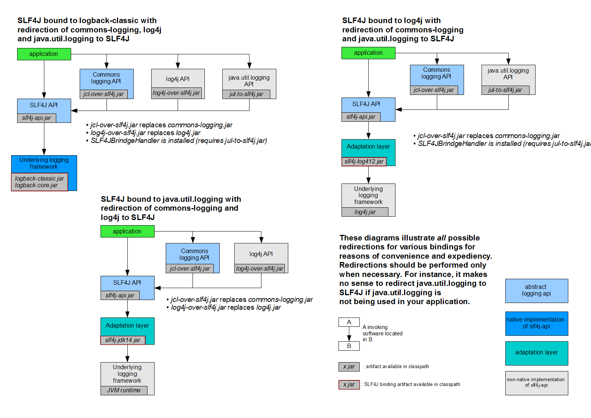

一、Spring Boot 入门¶
1、Spring Boot 简介¶
简化Spring应用开发的一个框架；
整个Spring技术栈的一个大整合；
J2EE开发的一站式解决方案；
2、微服务¶
2014，martin fowler
微服务：架构风格（服务微化）
一个应用应该是一组小型服务；可以通过HTTP的方式进行互通；
单体应用：ALL IN ONE
微服务：每一个功能元素最终都是一个可独立替换和独立升级的软件单元；
3、环境准备¶
http://www.gulixueyuan.com/ 谷粒学院
环境约束
–jdk1.8：Spring Boot 推荐jdk1.7及以上；java version "1.8.0_112"
–maven3.x：maven 3.3以上版本；Apache Maven 3.3.9
–IntelliJIDEA2017：IntelliJ IDEA 2017.2.2 x64、STS
–SpringBoot 1.5.9.RELEASE：1.5.9；
统一环境；
1、MAVEN设置；¶
给maven 的settings.xml配置文件的profiles标签添加
<profile>
<id>jdk-1.8</id>
<activation>
<activeByDefault>true</activeByDefault>
<jdk>1.8</jdk>
</activation>
<properties>
<maven.compiler.source>1.8</maven.compiler.source>
<maven.compiler.target>1.8</maven.compiler.target>
<maven.compiler.compilerVersion>1.8</maven.compiler.compilerVersion>
</properties>
</profile>
2、IDEA设置¶
整合maven进来；


4、Spring Boot HelloWorld¶
一个功能：
浏览器发送hello请求，服务器接受请求并处理，响应Hello World字符串；
1、创建一个maven工程；（jar）¶
2、导入spring boot相关的依赖¶
<parent>
<groupId>org.springframework.boot</groupId>
<artifactId>spring-boot-starter-parent</artifactId>
<version>1.5.9.RELEASE</version>
</parent>
<dependencies>
<dependency>
<groupId>org.springframework.boot</groupId>
<artifactId>spring-boot-starter-web</artifactId>
</dependency>
</dependencies>
3、编写一个主程序；启动Spring Boot应用¶
/**
* @SpringBootApplication 来标注一个主程序类，说明这是一个Spring Boot应用
*/
@SpringBootApplication
public class HelloWorldMainApplication {
public static void main(String[] args) {
// Spring应用启动起来
SpringApplication.run(HelloWorldMainApplication.class,args);
}
}
4、编写相关的Controller、Service¶
@Controller
public class HelloController {
@ResponseBody
@RequestMapping("/hello")
public String hello(){
return "Hello World!";
}
}
5、运行主程序测试¶
6、简化部署¶
<!-- 这个插件，可以将应用打包成一个可执行的jar包；-->
<build>
<plugins>
<plugin>
<groupId>org.springframework.boot</groupId>
<artifactId>spring-boot-maven-plugin</artifactId>
</plugin>
</plugins>
</build>
将这个应用打成jar包，直接使用java -jar的命令进行执行；
5、Hello World探究¶
1、POM文件¶
1、父项目¶
<parent>
<groupId>org.springframework.boot</groupId>
<artifactId>spring-boot-starter-parent</artifactId>
<version>1.5.9.RELEASE</version>
</parent>
他的父项目是
<parent>
<groupId>org.springframework.boot</groupId>
<artifactId>spring-boot-dependencies</artifactId>
<version>1.5.9.RELEASE</version>
<relativePath>../../spring-boot-dependencies</relativePath>
</parent>
他来真正管理Spring Boot应用里面的所有依赖版本；
Spring Boot的版本仲裁中心；
以后我们导入依赖默认是不需要写版本；（没有在dependencies里面管理的依赖自然需要声明版本号）
2、启动器¶
<dependency>
<groupId>org.springframework.boot</groupId>
<artifactId>spring-boot-starter-web</artifactId>
</dependency>
spring-boot-starter-==web==：
spring-boot-starter：spring-boot场景启动器；帮我们导入了web模块正常运行所依赖的组件；
Spring Boot将所有的功能场景都抽取出来，做成一个个的starters（启动器），只需要在项目里面引入这些starter相关场景的所有依赖都会导入进来。要用什么功能就导入什么场景的启动器
2、主程序类，主入口类¶
/**
* @SpringBootApplication 来标注一个主程序类，说明这是一个Spring Boot应用
*/
@SpringBootApplication
public class HelloWorldMainApplication {
public static void main(String[] args) {
// Spring应用启动起来
SpringApplication.run(HelloWorldMainApplication.class,args);
}
}
@SpringBootApplication: Spring Boot应用标注在某个类上说明这个类是SpringBoot的主配置类，SpringBoot就应该运行这个类的main方法来启动SpringBoot应用；
@Target(ElementType.TYPE)
@Retention(RetentionPolicy.RUNTIME)
@Documented
@Inherited
@SpringBootConfiguration
@EnableAutoConfiguration
@ComponentScan(excludeFilters = {
@Filter(type = FilterType.CUSTOM, classes = TypeExcludeFilter.class),
@Filter(type = FilterType.CUSTOM, classes = AutoConfigurationExcludeFilter.class) })
public @interface SpringBootApplication {
@SpringBootConfiguration:Spring Boot的配置类；
标注在某个类上，表示这是一个Spring Boot的配置类；
@Configuration:配置类上来标注这个注解；
配置类 ----- 配置文件；配置类也是容器中的一个组件；@Component
@EnableAutoConfiguration：开启自动配置功能；
以前我们需要配置的东西，Spring Boot帮我们自动配置；@EnableAutoConfiguration告诉SpringBoot开启自动配置功能；这样自动配置才能生效；
@AutoConfigurationPackage
@Import(EnableAutoConfigurationImportSelector.class)
public @interface EnableAutoConfiguration {
@AutoConfigurationPackage：自动配置包
@Import(AutoConfigurationPackages.Registrar.class)：
Spring的底层注解@Import，给容器中导入一个组件；导入的组件由AutoConfigurationPackages.Registrar.class；
==将主配置类（@SpringBootApplication标注的类）的所在包及下面所有子包里面的所有组件扫描到Spring容器；==
@Import(EnableAutoConfigurationImportSelector.class)；
给容器中导入组件？
EnableAutoConfigurationImportSelector：导入哪些组件的选择器；
将所有需要导入的组件以全类名的方式返回；这些组件就会被添加到容器中；
会给容器中导入非常多的自动配置类（xxxAutoConfiguration）；就是给容器中导入这个场景需要的所有组件，并配置好这些组件； 
有了自动配置类，免去了我们手动编写配置注入功能组件等的工作；
SpringFactoriesLoader.loadFactoryNames(EnableAutoConfiguration.class,classLoader)；
==Spring Boot在启动的时候从类路径下的META-INF/spring.factories中获取EnableAutoConfiguration指定的值，将这些值作为自动配置类导入到容器中，自动配置类就生效，帮我们进行自动配置工作；==以前我们需要自己配置的东西，自动配置类都帮我们；
J2EE的整体整合解决方案和自动配置都在spring-boot-autoconfigure-1.5.9.RELEASE.jar；
==Spring注解版（谷粒学院）==
6、使用Spring Initializer快速创建Spring Boot项目¶
1、IDEA：使用 Spring Initializer快速创建项目¶
IDE都支持使用Spring的项目创建向导快速创建一个Spring Boot项目；
选择我们需要的模块；向导会联网创建Spring Boot项目；
默认生成的Spring Boot项目；
- 主程序已经生成好了，我们只需要我们自己的逻辑
- resources文件夹中目录结构
- static：保存所有的静态资源； js css images；
- templates：保存所有的模板页面；（Spring Boot默认jar包使用嵌入式的Tomcat，默认不支持JSP页面）；可以使用模板引擎（freemarker、thymeleaf）；
- application.properties：Spring Boot应用的配置文件；可以修改一些默认设置；
2、STS使用 Spring Starter Project快速创建项目¶
二、配置文件¶
1、配置文件¶
SpringBoot使用一个全局的配置文件，配置文件名是固定的；
•application.properties
•application.yml
配置文件的作用：修改SpringBoot自动配置的默认值；SpringBoot在底层都给我们自动配置好；
YAML（YAML Ain't Markup Language）
YAML A Markup Language：是一个标记语言
YAML isn't Markup Language：不是一个标记语言；
标记语言：
以前的配置文件；大多都使用的是 xxxx.xml文件；
YAML：以数据为中心，比json、xml等更适合做配置文件；
YAML：配置例子
server:
port: 8081
XML：
<server>
<port>8081</port>
</server>
2、YAML语法：¶
1、基本语法¶
k:(空格)v：表示一对键值对（空格必须有）；
以空格的缩进来控制层级关系；只要是左对齐的一列数据，都是同一个层级的
server:
port: 8081
path: /hello
属性和值也是大小写敏感；
2、值的写法¶
字面量：普通的值（数字，字符串，布尔）¶
k: v：字面直接来写；
字符串默认不用加上单引号或者双引号；
""：双引号；不会转义字符串里面的特殊字符；特殊字符会作为本身想表示的意思
name: "zhangsan \n lisi"：输出；zhangsan 换行 lisi
''：单引号；会转义特殊字符，特殊字符最终只是一个普通的字符串数据
name: ‘zhangsan \n lisi’：输出；zhangsan \n lisi
对象、Map（属性和值）（键值对）：¶
k: v：在下一行来写对象的属性和值的关系；注意缩进
对象还是k: v的方式
friends:
lastName: zhangsan
age: 20
行内写法：
friends: {lastName: zhangsan,age: 18}
数组（List、Set）：¶
用- 值表示数组中的一个元素
pets:
- cat
- dog
- pig
行内写法
pets: [cat,dog,pig]
3、配置文件值注入¶
配置文件
person:
lastName: hello
age: 18
boss: false
birth: 2017/12/12
maps: {k1: v1,k2: 12}
lists:
- lisi
- zhaoliu
dog:
name: 小狗
age: 12
javaBean：
/**
* 将配置文件中配置的每一个属性的值，映射到这个组件中
* @ConfigurationProperties：告诉SpringBoot将本类中的所有属性和配置文件中相关的配置进行绑定；
* prefix = "person"：配置文件中哪个下面的所有属性进行一一映射
*
* 只有这个组件是容器中的组件，才能容器提供的@ConfigurationProperties功能；
*
*/
@Component
@ConfigurationProperties(prefix = "person")
public class Person {
private String lastName;
private Integer age;
private Boolean boss;
private Date birth;
private Map<String,Object> maps;
private List<Object> lists;
private Dog dog;
我们可以导入配置文件处理器，以后编写配置就有提示了
<!--导入配置文件处理器，配置文件进行绑定就会有提示-->
<dependency>
<groupId>org.springframework.boot</groupId>
<artifactId>spring-boot-configuration-processor</artifactId>
<optional>true</optional>
</dependency>
1、properties配置文件在idea中默认utf-8可能会乱码¶
调整

2、@Value获取值和@ConfigurationProperties获取值比较¶
| @ConfigurationProperties | @Value | |
|---|---|---|
| 功能 | 批量注入配置文件中的属性 | 一个个指定 |
| 松散绑定（松散语法） | 支持 | 不支持 |
| SpEL | 不支持 | 支持 |
| JSR303数据校验 | 支持 | 不支持 |
| 复杂类型封装 | 支持 | 不支持 |
配置文件yml还是properties他们都能获取到值；
如果说，我们只是在某个业务逻辑中需要获取一下配置文件中的某项值，使用@Value；
如果说，我们专门编写了一个javaBean来和配置文件进行映射，我们就直接使用@ConfigurationProperties；
3、配置文件注入值数据校验¶
@Component
@ConfigurationProperties(prefix = "person")
@Validated
public class Person {
/**
* <bean class="Person">
* <property name="lastName" value="字面量/${key}从环境变量、配置文件中获取值/#{SpEL}"></property>
* <bean/>
*/
//lastName必须是邮箱格式
@Email
//@Value("${person.last-name}")
private String lastName;
//@Value("#{11*2}")
private Integer age;
//@Value("true")
private Boolean boss;
private Date birth;
private Map<String,Object> maps;
private List<Object> lists;
private Dog dog;
4、@PropertySource&@ImportResource&@Bean¶
@PropertySource：加载指定的配置文件；
/**
* 将配置文件中配置的每一个属性的值，映射到这个组件中
* @ConfigurationProperties：告诉SpringBoot将本类中的所有属性和配置文件中相关的配置进行绑定；
* prefix = "person"：配置文件中哪个下面的所有属性进行一一映射
*
* 只有这个组件是容器中的组件，才能容器提供的@ConfigurationProperties功能；
* @ConfigurationProperties(prefix = "person")默认从全局配置文件中获取值；
*
*/
@PropertySource(value = {"classpath:person.properties"})
@Component
@ConfigurationProperties(prefix = "person")
//@Validated
public class Person {
/**
* <bean class="Person">
* <property name="lastName" value="字面量/${key}从环境变量、配置文件中获取值/#{SpEL}"></property>
* <bean/>
*/
//lastName必须是邮箱格式
// @Email
//@Value("${person.last-name}")
private String lastName;
//@Value("#{11*2}")
private Integer age;
//@Value("true")
private Boolean boss;
@ImportResource：导入Spring的配置文件，让配置文件里面的内容生效；
Spring Boot里面没有Spring的配置文件，我们自己编写的配置文件，也不能自动识别；
想让Spring的配置文件生效，加载进来；@ImportResource标注在一个配置类上
@ImportResource(locations = {"classpath:beans.xml"})
导入Spring的配置文件让其生效
不来编写Spring的配置文件
<?xml version="1.0" encoding="UTF-8"?>
<beans xmlns="http://www.springframework.org/schema/beans"
xmlns:xsi="http://www.w3.org/2001/XMLSchema-instance"
xsi:schemaLocation="http://www.springframework.org/schema/beans http://www.springframework.org/schema/beans/spring-beans.xsd">
<bean id="helloService" class="com.atguigu.springboot.service.HelloService"></bean>
</beans>
SpringBoot推荐给容器中添加组件的方式；推荐使用全注解的方式
1、配置类@Configuration------>Spring配置文件
2、使用@Bean给容器中添加组件
/**
* @Configuration：指明当前类是一个配置类；就是来替代之前的Spring配置文件
*
* 在配置文件中用<bean><bean/>标签添加组件
*
*/
@Configuration
public class MyAppConfig {
//将方法的返回值添加到容器中；容器中这个组件默认的id就是方法名
@Bean
public HelloService helloService02(){
System.out.println("配置类@Bean给容器中添加组件了...");
return new HelloService();
}
}
4、配置文件占位符¶
1、随机数¶
${random.value}、${random.int}、${random.long}
${random.int(10)}、${random.int[1024,65536]}
2、占位符获取之前配置的值，如果没有可以是用:指定默认值¶
person.last-name=张三${random.uuid}
person.age=${random.int}
person.birth=2017/12/15
person.boss=false
person.maps.k1=v1
person.maps.k2=14
person.lists=a,b,c
person.dog.name=${person.hello:hello}_dog
person.dog.age=15
5、Profile¶
1、多Profile文件¶
我们在主配置文件编写的时候，文件名可以是 application-{profile}.properties/yml
默认使用application.properties的配置；
2、yml支持多文档块方式¶
server:
port: 8081
spring:
profiles:
active: prod
---
server:
port: 8083
spring:
profiles: dev
---
server:
port: 8084
spring:
profiles: prod #指定属于哪个环境
3、激活指定profile¶
1、在配置文件中指定 spring.profiles.active=dev
2、命令行：
java -jar spring-boot-02-config-0.0.1-SNAPSHOT.jar --spring.profiles.active=dev；
可以直接在测试的时候，配置传入命令行参数
3、虚拟机参数；
-Dspring.profiles.active=dev
6、配置文件加载位置¶
springboot 启动会扫描以下位置的application.properties或者application.yml文件作为Spring boot的默认配置文件
–file:./config/
–file:./
–classpath:/config/
–classpath:/
优先级由高到底，高优先级的配置会覆盖低优先级的配置；
SpringBoot会从这四个位置全部加载主配置文件；互补配置；
==我们还可以通过spring.config.location来改变默认的配置文件位置==
项目打包好以后，我们可以使用命令行参数的形式，启动项目的时候来指定配置文件的新位置；指定配置文件和默认加载的这些配置文件共同起作用形成互补配置；
java -jar spring-boot-02-config-02-0.0.1-SNAPSHOT.jar --spring.config.location=G:/application.properties
7、外部配置加载顺序¶
==SpringBoot也可以从以下位置加载配置； 优先级从高到低；高优先级的配置覆盖低优先级的配置，所有的配置会形成互补配置==
1.命令行参数
所有的配置都可以在命令行上进行指定
java -jar spring-boot-02-config-02-0.0.1-SNAPSHOT.jar --server.port=8087 --server.context-path=/abc
多个配置用空格分开； --配置项=值
2.来自java:comp/env的JNDI属性
3.Java系统属性（System.getProperties()）
4.操作系统环境变量
5.RandomValuePropertySource配置的random.*属性值
==由jar包外向jar包内进行寻找；==
==优先加载带profile==
6.jar包外部的application-{profile}.properties或application.yml(带spring.profile)配置文件
7.jar包内部的application-{profile}.properties或application.yml(带spring.profile)配置文件
==再来加载不带profile==
8.jar包外部的application.properties或application.yml(不带spring.profile)配置文件
9.jar包内部的application.properties或application.yml(不带spring.profile)配置文件
10.@Configuration注解类上的@PropertySource
11.通过SpringApplication.setDefaultProperties指定的默认属性
所有支持的配置加载来源；
8、自动配置原理¶
配置文件到底能写什么？怎么写？自动配置原理；
1、自动配置原理：¶
1）、SpringBoot启动的时候加载主配置类，开启了自动配置功能 ==@EnableAutoConfiguration==
2）、@EnableAutoConfiguration 作用：
-
利用EnableAutoConfigurationImportSelector给容器中导入一些组件？
-
可以查看selectImports()方法的内容；
-
List
configurations = getCandidateConfigurations(annotationMetadata, attributes);获取候选的配置 -
```java SpringFactoriesLoader.loadFactoryNames() 扫描所有jar包类路径下 META-INF/spring.factories 把扫描到的这些文件的内容包装成properties对象 从properties中获取到EnableAutoConfiguration.class类（类名）对应的值，然后把他们添加在容器中
```
==将 类路径下 META-INF/spring.factories 里面配置的所有EnableAutoConfiguration的值加入到了容器中；==
# Auto Configure
org.springframework.boot.autoconfigure.EnableAutoConfiguration=\
org.springframework.boot.autoconfigure.admin.SpringApplicationAdminJmxAutoConfiguration,\
org.springframework.boot.autoconfigure.aop.AopAutoConfiguration,\
org.springframework.boot.autoconfigure.amqp.RabbitAutoConfiguration,\
org.springframework.boot.autoconfigure.batch.BatchAutoConfiguration,\
org.springframework.boot.autoconfigure.cache.CacheAutoConfiguration,\
org.springframework.boot.autoconfigure.cassandra.CassandraAutoConfiguration,\
org.springframework.boot.autoconfigure.cloud.CloudAutoConfiguration,\
org.springframework.boot.autoconfigure.context.ConfigurationPropertiesAutoConfiguration,\
org.springframework.boot.autoconfigure.context.MessageSourceAutoConfiguration,\
org.springframework.boot.autoconfigure.context.PropertyPlaceholderAutoConfiguration,\
org.springframework.boot.autoconfigure.couchbase.CouchbaseAutoConfiguration,\
org.springframework.boot.autoconfigure.dao.PersistenceExceptionTranslationAutoConfiguration,\
org.springframework.boot.autoconfigure.data.cassandra.CassandraDataAutoConfiguration,\
org.springframework.boot.autoconfigure.data.cassandra.CassandraRepositoriesAutoConfiguration,\
org.springframework.boot.autoconfigure.data.couchbase.CouchbaseDataAutoConfiguration,\
org.springframework.boot.autoconfigure.data.couchbase.CouchbaseRepositoriesAutoConfiguration,\
org.springframework.boot.autoconfigure.data.elasticsearch.ElasticsearchAutoConfiguration,\
org.springframework.boot.autoconfigure.data.elasticsearch.ElasticsearchDataAutoConfiguration,\
org.springframework.boot.autoconfigure.data.elasticsearch.ElasticsearchRepositoriesAutoConfiguration,\
org.springframework.boot.autoconfigure.data.jpa.JpaRepositoriesAutoConfiguration,\
org.springframework.boot.autoconfigure.data.ldap.LdapDataAutoConfiguration,\
org.springframework.boot.autoconfigure.data.ldap.LdapRepositoriesAutoConfiguration,\
org.springframework.boot.autoconfigure.data.mongo.MongoDataAutoConfiguration,\
org.springframework.boot.autoconfigure.data.mongo.MongoRepositoriesAutoConfiguration,\
org.springframework.boot.autoconfigure.data.neo4j.Neo4jDataAutoConfiguration,\
org.springframework.boot.autoconfigure.data.neo4j.Neo4jRepositoriesAutoConfiguration,\
org.springframework.boot.autoconfigure.data.solr.SolrRepositoriesAutoConfiguration,\
org.springframework.boot.autoconfigure.data.redis.RedisAutoConfiguration,\
org.springframework.boot.autoconfigure.data.redis.RedisRepositoriesAutoConfiguration,\
org.springframework.boot.autoconfigure.data.rest.RepositoryRestMvcAutoConfiguration,\
org.springframework.boot.autoconfigure.data.web.SpringDataWebAutoConfiguration,\
org.springframework.boot.autoconfigure.elasticsearch.jest.JestAutoConfiguration,\
org.springframework.boot.autoconfigure.freemarker.FreeMarkerAutoConfiguration,\
org.springframework.boot.autoconfigure.gson.GsonAutoConfiguration,\
org.springframework.boot.autoconfigure.h2.H2ConsoleAutoConfiguration,\
org.springframework.boot.autoconfigure.hateoas.HypermediaAutoConfiguration,\
org.springframework.boot.autoconfigure.hazelcast.HazelcastAutoConfiguration,\
org.springframework.boot.autoconfigure.hazelcast.HazelcastJpaDependencyAutoConfiguration,\
org.springframework.boot.autoconfigure.info.ProjectInfoAutoConfiguration,\
org.springframework.boot.autoconfigure.integration.IntegrationAutoConfiguration,\
org.springframework.boot.autoconfigure.jackson.JacksonAutoConfiguration,\
org.springframework.boot.autoconfigure.jdbc.DataSourceAutoConfiguration,\
org.springframework.boot.autoconfigure.jdbc.JdbcTemplateAutoConfiguration,\
org.springframework.boot.autoconfigure.jdbc.JndiDataSourceAutoConfiguration,\
org.springframework.boot.autoconfigure.jdbc.XADataSourceAutoConfiguration,\
org.springframework.boot.autoconfigure.jdbc.DataSourceTransactionManagerAutoConfiguration,\
org.springframework.boot.autoconfigure.jms.JmsAutoConfiguration,\
org.springframework.boot.autoconfigure.jmx.JmxAutoConfiguration,\
org.springframework.boot.autoconfigure.jms.JndiConnectionFactoryAutoConfiguration,\
org.springframework.boot.autoconfigure.jms.activemq.ActiveMQAutoConfiguration,\
org.springframework.boot.autoconfigure.jms.artemis.ArtemisAutoConfiguration,\
org.springframework.boot.autoconfigure.flyway.FlywayAutoConfiguration,\
org.springframework.boot.autoconfigure.groovy.template.GroovyTemplateAutoConfiguration,\
org.springframework.boot.autoconfigure.jersey.JerseyAutoConfiguration,\
org.springframework.boot.autoconfigure.jooq.JooqAutoConfiguration,\
org.springframework.boot.autoconfigure.kafka.KafkaAutoConfiguration,\
org.springframework.boot.autoconfigure.ldap.embedded.EmbeddedLdapAutoConfiguration,\
org.springframework.boot.autoconfigure.ldap.LdapAutoConfiguration,\
org.springframework.boot.autoconfigure.liquibase.LiquibaseAutoConfiguration,\
org.springframework.boot.autoconfigure.mail.MailSenderAutoConfiguration,\
org.springframework.boot.autoconfigure.mail.MailSenderValidatorAutoConfiguration,\
org.springframework.boot.autoconfigure.mobile.DeviceResolverAutoConfiguration,\
org.springframework.boot.autoconfigure.mobile.DeviceDelegatingViewResolverAutoConfiguration,\
org.springframework.boot.autoconfigure.mobile.SitePreferenceAutoConfiguration,\
org.springframework.boot.autoconfigure.mongo.embedded.EmbeddedMongoAutoConfiguration,\
org.springframework.boot.autoconfigure.mongo.MongoAutoConfiguration,\
org.springframework.boot.autoconfigure.mustache.MustacheAutoConfiguration,\
org.springframework.boot.autoconfigure.orm.jpa.HibernateJpaAutoConfiguration,\
org.springframework.boot.autoconfigure.reactor.ReactorAutoConfiguration,\
org.springframework.boot.autoconfigure.security.SecurityAutoConfiguration,\
org.springframework.boot.autoconfigure.security.SecurityFilterAutoConfiguration,\
org.springframework.boot.autoconfigure.security.FallbackWebSecurityAutoConfiguration,\
org.springframework.boot.autoconfigure.security.oauth2.OAuth2AutoConfiguration,\
org.springframework.boot.autoconfigure.sendgrid.SendGridAutoConfiguration,\
org.springframework.boot.autoconfigure.session.SessionAutoConfiguration,\
org.springframework.boot.autoconfigure.social.SocialWebAutoConfiguration,\
org.springframework.boot.autoconfigure.social.FacebookAutoConfiguration,\
org.springframework.boot.autoconfigure.social.LinkedInAutoConfiguration,\
org.springframework.boot.autoconfigure.social.TwitterAutoConfiguration,\
org.springframework.boot.autoconfigure.solr.SolrAutoConfiguration,\
org.springframework.boot.autoconfigure.thymeleaf.ThymeleafAutoConfiguration,\
org.springframework.boot.autoconfigure.transaction.TransactionAutoConfiguration,\
org.springframework.boot.autoconfigure.transaction.jta.JtaAutoConfiguration,\
org.springframework.boot.autoconfigure.validation.ValidationAutoConfiguration,\
org.springframework.boot.autoconfigure.web.DispatcherServletAutoConfiguration,\
org.springframework.boot.autoconfigure.web.EmbeddedServletContainerAutoConfiguration,\
org.springframework.boot.autoconfigure.web.ErrorMvcAutoConfiguration,\
org.springframework.boot.autoconfigure.web.HttpEncodingAutoConfiguration,\
org.springframework.boot.autoconfigure.web.HttpMessageConvertersAutoConfiguration,\
org.springframework.boot.autoconfigure.web.MultipartAutoConfiguration,\
org.springframework.boot.autoconfigure.web.ServerPropertiesAutoConfiguration,\
org.springframework.boot.autoconfigure.web.WebClientAutoConfiguration,\
org.springframework.boot.autoconfigure.web.WebMvcAutoConfiguration,\
org.springframework.boot.autoconfigure.websocket.WebSocketAutoConfiguration,\
org.springframework.boot.autoconfigure.websocket.WebSocketMessagingAutoConfiguration,\
org.springframework.boot.autoconfigure.webservices.WebServicesAutoConfiguration
每一个这样的 xxxAutoConfiguration类都是容器中的一个组件，都加入到容器中；用他们来做自动配置；
3）、每一个自动配置类进行自动配置功能；
4）、以HttpEncodingAutoConfiguration（Http编码自动配置）为例解释自动配置原理；
@Configuration //表示这是一个配置类，以前编写的配置文件一样，也可以给容器中添加组件
@EnableConfigurationProperties(HttpEncodingProperties.class) //启动指定类的ConfigurationProperties功能；将配置文件中对应的值和HttpEncodingProperties绑定起来；并把HttpEncodingProperties加入到ioc容器中
@ConditionalOnWebApplication //Spring底层@Conditional注解（Spring注解版），根据不同的条件，如果满足指定的条件，整个配置类里面的配置就会生效； 判断当前应用是否是web应用，如果是，当前配置类生效
@ConditionalOnClass(CharacterEncodingFilter.class) //判断当前项目有没有这个类CharacterEncodingFilter；SpringMVC中进行乱码解决的过滤器；
@ConditionalOnProperty(prefix = "spring.http.encoding", value = "enabled", matchIfMissing = true) //判断配置文件中是否存在某个配置 spring.http.encoding.enabled；如果不存在，判断也是成立的
//即使我们配置文件中不配置pring.http.encoding.enabled=true，也是默认生效的；
public class HttpEncodingAutoConfiguration {
//他已经和SpringBoot的配置文件映射了
private final HttpEncodingProperties properties;
//只有一个有参构造器的情况下，参数的值就会从容器中拿
public HttpEncodingAutoConfiguration(HttpEncodingProperties properties) {
this.properties = properties;
}
@Bean //给容器中添加一个组件，这个组件的某些值需要从properties中获取
@ConditionalOnMissingBean(CharacterEncodingFilter.class) //判断容器没有这个组件？
public CharacterEncodingFilter characterEncodingFilter() {
CharacterEncodingFilter filter = new OrderedCharacterEncodingFilter();
filter.setEncoding(this.properties.getCharset().name());
filter.setForceRequestEncoding(this.properties.shouldForce(Type.REQUEST));
filter.setForceResponseEncoding(this.properties.shouldForce(Type.RESPONSE));
return filter;
}
根据当前不同的条件判断，决定这个配置类是否生效？
一但这个配置类生效；这个配置类就会给容器中添加各种组件；这些组件的属性是从对应的properties类中获取的，这些类里面的每一个属性又是和配置文件绑定的；
5）、所有在配置文件中能配置的属性都是在xxxxProperties类中封装者‘；配置文件能配置什么就可以参照某个功能对应的这个属性类
@ConfigurationProperties(prefix = "spring.http.encoding") //从配置文件中获取指定的值和bean的属性进行绑定
public class HttpEncodingProperties {
public static final Charset DEFAULT_CHARSET = Charset.forName("UTF-8");
精髓：
1）、SpringBoot启动会加载大量的自动配置类
2）、我们看我们需要的功能有没有SpringBoot默认写好的自动配置类；
3）、我们再来看这个自动配置类中到底配置了哪些组件；（只要我们要用的组件有，我们就不需要再来配置了）
4）、给容器中自动配置类添加组件的时候，会从properties类中获取某些属性。我们就可以在配置文件中指定这些属性的值；
xxxxAutoConfigurartion：自动配置类；
给容器中添加组件
xxxxProperties:封装配置文件中相关属性；
2、细节¶
1、@Conditional派生注解（Spring注解版原生的@Conditional作用）¶
作用：必须是@Conditional指定的条件成立，才给容器中添加组件，配置配里面的所有内容才生效；
| @Conditional扩展注解 | 作用（判断是否满足当前指定条件） |
|---|---|
| @ConditionalOnJava | 系统的java版本是否符合要求 |
| @ConditionalOnBean | 容器中存在指定Bean； |
| @ConditionalOnMissingBean | 容器中不存在指定Bean； |
| @ConditionalOnExpression | 满足SpEL表达式指定 |
| @ConditionalOnClass | 系统中有指定的类 |
| @ConditionalOnMissingClass | 系统中没有指定的类 |
| @ConditionalOnSingleCandidate | 容器中只有一个指定的Bean，或者这个Bean是首选Bean |
| @ConditionalOnProperty | 系统中指定的属性是否有指定的值 |
| @ConditionalOnResource | 类路径下是否存在指定资源文件 |
| @ConditionalOnWebApplication | 当前是web环境 |
| @ConditionalOnNotWebApplication | 当前不是web环境 |
| @ConditionalOnJndi | JNDI存在指定项 |
自动配置类必须在一定的条件下才能生效；
我们怎么知道哪些自动配置类生效；
==我们可以通过启用 debug=true属性；来让控制台打印自动配置报告==，这样我们就可以很方便的知道哪些自动配置类生效；
=========================
AUTO-CONFIGURATION REPORT
=========================
Positive matches:（自动配置类启用的）
-----------------
DispatcherServletAutoConfiguration matched:
- @ConditionalOnClass found required class 'org.springframework.web.servlet.DispatcherServlet'; @ConditionalOnMissingClass did not find unwanted class (OnClassCondition)
- @ConditionalOnWebApplication (required) found StandardServletEnvironment (OnWebApplicationCondition)
Negative matches:（没有启动，没有匹配成功的自动配置类）
-----------------
ActiveMQAutoConfiguration:
Did not match:
- @ConditionalOnClass did not find required classes 'javax.jms.ConnectionFactory', 'org.apache.activemq.ActiveMQConnectionFactory' (OnClassCondition)
AopAutoConfiguration:
Did not match:
- @ConditionalOnClass did not find required classes 'org.aspectj.lang.annotation.Aspect', 'org.aspectj.lang.reflect.Advice' (OnClassCondition)
三、日志¶
1、日志框架¶
小张；开发一个大型系统；
1、System.out.println("")；将关键数据打印在控制台；去掉？写在一个文件？
2、框架来记录系统的一些运行时信息；日志框架 ； zhanglogging.jar；
3、高大上的几个功能？异步模式？自动归档？xxxx？ zhanglogging-good.jar？
4、将以前框架卸下来？换上新的框架，重新修改之前相关的API；zhanglogging-prefect.jar；
5、JDBC---数据库驱动；
写了一个统一的接口层；日志门面（日志的一个抽象层）；logging-abstract.jar；
给项目中导入具体的日志实现就行了；我们之前的日志框架都是实现的抽象层；
市面上的日志框架；
JUL、JCL、Jboss-logging、logback、log4j、log4j2、slf4j....
| 日志门面 （日志的抽象层） | 日志实现 |
|---|---|
| ~~JCL（Jakarta Commons Logging）~~ SLF4j（Simple Logging Facade for Java） ~~jboss-logging~~ | Log4j JUL（java.util.logging） Log4j2 Logback |
左边选一个门面（抽象层）、右边来选一个实现；
日志门面： SLF4J；
日志实现：Logback；
SpringBoot：底层是Spring框架，Spring框架默认是用JCL；‘
==SpringBoot选用 SLF4j和logback；==
2、SLF4j使用¶
1、如何在系统中使用SLF4j https://www.slf4j.org¶
以后开发的时候，日志记录方法的调用，不应该来直接调用日志的实现类，而是调用日志抽象层里面的方法；
给系统里面导入slf4j的jar和 logback的实现jar
import org.slf4j.Logger;
import org.slf4j.LoggerFactory;
public class HelloWorld {
public static void main(String[] args) {
Logger logger = LoggerFactory.getLogger(HelloWorld.class);
logger.info("Hello World");
}
}
图示；

每一个日志的实现框架都有自己的配置文件。使用slf4j以后，配置文件还是做成日志实现框架自己本身的配置文件；
2、遗留问题¶
a（slf4j+logback）: Spring（commons-logging）、Hibernate（jboss-logging）、MyBatis、xxxx
统一日志记录，即使是别的框架和我一起统一使用slf4j进行输出？

如何让系统中所有的日志都统一到slf4j；
==1、将系统中其他日志框架先排除出去；==
==2、用中间包来替换原有的日志框架；==
==3、我们导入slf4j其他的实现==
3、SpringBoot日志关系¶
<dependency>
<groupId>org.springframework.boot</groupId>
<artifactId>spring-boot-starter</artifactId>
</dependency>
SpringBoot使用它来做日志功能；
<dependency>
<groupId>org.springframework.boot</groupId>
<artifactId>spring-boot-starter-logging</artifactId>
</dependency>
底层依赖关系

总结：
1）、SpringBoot底层也是使用slf4j+logback的方式进行日志记录
2）、SpringBoot也把其他的日志都替换成了slf4j；
3）、中间替换包？
@SuppressWarnings("rawtypes")
public abstract class LogFactory {
static String UNSUPPORTED_OPERATION_IN_JCL_OVER_SLF4J = "http://www.slf4j.org/codes.html#unsupported_operation_in_jcl_over_slf4j";
static LogFactory logFactory = new SLF4JLogFactory();

4）、如果我们要引入其他框架？一定要把这个框架的默认日志依赖移除掉？
Spring框架用的是commons-logging；
<dependency>
<groupId>org.springframework</groupId>
<artifactId>spring-core</artifactId>
<exclusions>
<exclusion>
<groupId>commons-logging</groupId>
<artifactId>commons-logging</artifactId>
</exclusion>
</exclusions>
</dependency>
==SpringBoot能自动适配所有的日志，而且底层使用slf4j+logback的方式记录日志，引入其他框架的时候，只需要把这个框架依赖的日志框架排除掉即可；==
4、日志使用；¶
1、默认配置¶
SpringBoot默认帮我们配置好了日志；
//记录器
Logger logger = LoggerFactory.getLogger(getClass());
@Test
public void contextLoads() {
//System.out.println();
//日志的级别；
//由低到高 trace<debug<info<warn<error
//可以调整输出的日志级别；日志就只会在这个级别以以后的高级别生效
logger.trace("这是trace日志...");
logger.debug("这是debug日志...");
//SpringBoot默认给我们使用的是info级别的，没有指定级别的就用SpringBoot默认规定的级别；root级别
logger.info("这是info日志...");
logger.warn("这是warn日志...");
logger.error("这是error日志...");
}
日志输出格式：
%d表示日期时间，
%thread表示线程名，
%-5level：级别从左显示5个字符宽度
%logger{50} 表示logger名字最长50个字符，否则按照句点分割。
%msg：日志消息，
%n是换行符
-->
%d{yyyy-MM-dd HH:mm:ss.SSS} [%thread] %-5level %logger{50} - %msg%n
SpringBoot修改日志的默认配置
logging.level.com.atguigu=trace
#logging.path=
# 不指定路径在当前项目下生成springboot.log日志
# 可以指定完整的路径；
#logging.file=G:/springboot.log
# 在当前磁盘的根路径下创建spring文件夹和里面的log文件夹；使用 spring.log 作为默认文件
logging.path=/spring/log
# 在控制台输出的日志的格式
logging.pattern.console=%d{yyyy-MM-dd} [%thread] %-5level %logger{50} - %msg%n
# 指定文件中日志输出的格式
logging.pattern.file=%d{yyyy-MM-dd} === [%thread] === %-5level === %logger{50} ==== %msg%n
| logging.file | logging.path | Example | Description |
|---|---|---|---|
| (none) | (none) | 只在控制台输出 | |
| 指定文件名 | (none) | my.log | 输出日志到my.log文件 |
| (none) | 指定目录 | /var/log | 输出到指定目录的 spring.log 文件中 |
2、指定配置¶
给类路径下放上每个日志框架自己的配置文件即可；SpringBoot就不使用他默认配置的了
| Logging System | Customization |
|---|---|
| Logback | logback-spring.xml, logback-spring.groovy, logback.xml or logback.groovy |
| Log4j2 | log4j2-spring.xml or log4j2.xml |
| JDK (Java Util Logging) | logging.properties |
logback.xml：直接就被日志框架识别了；
logback-spring.xml：日志框架就不直接加载日志的配置项，由SpringBoot解析日志配置，可以使用SpringBoot的高级Profile功能
<springProfile name="staging">
<!-- configuration to be enabled when the "staging" profile is active -->
可以指定某段配置只在某个环境下生效
</springProfile>
如：
<appender name="stdout" class="ch.qos.logback.core.ConsoleAppender">
<!--
日志输出格式：
%d表示日期时间，
%thread表示线程名，
%-5level：级别从左显示5个字符宽度
%logger{50} 表示logger名字最长50个字符，否则按照句点分割。
%msg：日志消息，
%n是换行符
-->
<layout class="ch.qos.logback.classic.PatternLayout">
<springProfile name="dev">
<pattern>%d{yyyy-MM-dd HH:mm:ss.SSS} ----> [%thread] ---> %-5level %logger{50} - %msg%n</pattern>
</springProfile>
<springProfile name="!dev">
<pattern>%d{yyyy-MM-dd HH:mm:ss.SSS} ==== [%thread] ==== %-5level %logger{50} - %msg%n</pattern>
</springProfile>
</layout>
</appender>
如果使用logback.xml作为日志配置文件，还要使用profile功能，会有以下错误
no applicable action for [springProfile]
5、切换日志框架¶
可以按照slf4j的日志适配图，进行相关的切换；
slf4j+log4j的方式；
<dependency>
<groupId>org.springframework.boot</groupId>
<artifactId>spring-boot-starter-web</artifactId>
<exclusions>
<exclusion>
<artifactId>logback-classic</artifactId>
<groupId>ch.qos.logback</groupId>
</exclusion>
<exclusion>
<artifactId>log4j-over-slf4j</artifactId>
<groupId>org.slf4j</groupId>
</exclusion>
</exclusions>
</dependency>
<dependency>
<groupId>org.slf4j</groupId>
<artifactId>slf4j-log4j12</artifactId>
</dependency>
切换为log4j2
<dependency>
<groupId>org.springframework.boot</groupId>
<artifactId>spring-boot-starter-web</artifactId>
<exclusions>
<exclusion>
<artifactId>spring-boot-starter-logging</artifactId>
<groupId>org.springframework.boot</groupId>
</exclusion>
</exclusions>
</dependency>
<dependency>
<groupId>org.springframework.boot</groupId>
<artifactId>spring-boot-starter-log4j2</artifactId>
</dependency>
四、Web开发¶
1、简介¶
使用SpringBoot；
1）、创建SpringBoot应用，选中我们需要的模块；
2）、SpringBoot已经默认将这些场景配置好了，只需要在配置文件中指定少量配置就可以运行起来
3）、自己编写业务代码；
自动配置原理？
这个场景SpringBoot帮我们配置了什么？能不能修改？能修改哪些配置？能不能扩展？xxx
xxxxAutoConfiguration：帮我们给容器中自动配置组件；
xxxxProperties:配置类来封装配置文件的内容；
2、SpringBoot对静态资源的映射规则；¶
@ConfigurationProperties(prefix = "spring.resources", ignoreUnknownFields = false)
public class ResourceProperties implements ResourceLoaderAware {
//可以设置和静态资源有关的参数，缓存时间等
WebMvcAuotConfiguration：
@Override
public void addResourceHandlers(ResourceHandlerRegistry registry) {
if (!this.resourceProperties.isAddMappings()) {
logger.debug("Default resource handling disabled");
return;
}
Integer cachePeriod = this.resourceProperties.getCachePeriod();
if (!registry.hasMappingForPattern("/webjars/**")) {
customizeResourceHandlerRegistration(
registry.addResourceHandler("/webjars/**")
.addResourceLocations(
"classpath:/META-INF/resources/webjars/")
.setCachePeriod(cachePeriod));
}
String staticPathPattern = this.mvcProperties.getStaticPathPattern();
//静态资源文件夹映射
if (!registry.hasMappingForPattern(staticPathPattern)) {
customizeResourceHandlerRegistration(
registry.addResourceHandler(staticPathPattern)
.addResourceLocations(
this.resourceProperties.getStaticLocations())
.setCachePeriod(cachePeriod));
}
}
//配置欢迎页映射
@Bean
public WelcomePageHandlerMapping welcomePageHandlerMapping(
ResourceProperties resourceProperties) {
return new WelcomePageHandlerMapping(resourceProperties.getWelcomePage(),
this.mvcProperties.getStaticPathPattern());
}
//配置喜欢的图标
@Configuration
@ConditionalOnProperty(value = "spring.mvc.favicon.enabled", matchIfMissing = true)
public static class FaviconConfiguration {
private final ResourceProperties resourceProperties;
public FaviconConfiguration(ResourceProperties resourceProperties) {
this.resourceProperties = resourceProperties;
}
@Bean
public SimpleUrlHandlerMapping faviconHandlerMapping() {
SimpleUrlHandlerMapping mapping = new SimpleUrlHandlerMapping();
mapping.setOrder(Ordered.HIGHEST_PRECEDENCE + 1);
//所有 **/favicon.ico
mapping.setUrlMap(Collections.singletonMap("**/favicon.ico",
faviconRequestHandler()));
return mapping;
}
@Bean
public ResourceHttpRequestHandler faviconRequestHandler() {
ResourceHttpRequestHandler requestHandler = new ResourceHttpRequestHandler();
requestHandler
.setLocations(this.resourceProperties.getFaviconLocations());
return requestHandler;
}
}
==1）、所有 /webjars/** ，都去 classpath:/META-INF/resources/webjars/ 找资源；==
webjars：以jar包的方式引入静态资源；
http://www.webjars.org/

localhost:8080/webjars/jquery/3.3.1/jquery.js
<!--引入jquery-webjar-->在访问的时候只需要写webjars下面资源的名称即可
<dependency>
<groupId>org.webjars</groupId>
<artifactId>jquery</artifactId>
<version>3.3.1</version>
</dependency>
==2）、"/**" 访问当前项目的任何资源，都去（静态资源的文件夹）找映射==
"classpath:/META-INF/resources/",
"classpath:/resources/",
"classpath:/static/",
"classpath:/public/"
"/"：当前项目的根路径
localhost:8080/abc === 去静态资源文件夹里面找abc
==3）、欢迎页； 静态资源文件夹下的所有index.html页面；被"/**"映射；==
localhost:8080/ 找index页面
==4）、所有的 **/favicon.ico 都是在静态资源文件下找；==
3、模板引擎¶
JSP、Velocity、Freemarker、Thymeleaf

SpringBoot推荐的Thymeleaf；
语法更简单，功能更强大；
1、引入thymeleaf；¶
<dependency>
<groupId>org.springframework.boot</groupId>
<artifactId>spring-boot-starter-thymeleaf</artifactId>
2.1.6
</dependency>
切换thymeleaf版本
<properties>
<thymeleaf.version>3.0.9.RELEASE</thymeleaf.version>
<!-- 布局功能的支持程序 thymeleaf3主程序 layout2以上版本 -->
<!-- thymeleaf2 layout1-->
<thymeleaf-layout-dialect.version>2.2.2</thymeleaf-layout-dialect.version>
</properties>
2、Thymeleaf使用¶
@ConfigurationProperties(prefix = "spring.thymeleaf")
public class ThymeleafProperties {
private static final Charset DEFAULT_ENCODING = Charset.forName("UTF-8");
private static final MimeType DEFAULT_CONTENT_TYPE = MimeType.valueOf("text/html");
public static final String DEFAULT_PREFIX = "classpath:/templates/";
public static final String DEFAULT_SUFFIX = ".html";
//
只要我们把HTML页面放在classpath:/templates/，thymeleaf就能自动渲染；
使用：
1、导入thymeleaf的名称空间
<html lang="en" xmlns:th="http://www.thymeleaf.org">
2、使用thymeleaf语法；
<!DOCTYPE html>
<html lang="en" xmlns:th="http://www.thymeleaf.org">
<head>
<meta charset="UTF-8">
<title>Title</title>
</head>
<body>
<h1>成功！</h1>
<!--th:text 将div里面的文本内容设置为 -->
<div th:text="${hello}">这是显示欢迎信息</div>
</body>
</html>
3、语法规则¶
1）、th:text；改变当前元素里面的文本内容；
th：任意html属性；来替换原生属性的值

2）、表达式？
Simple expressions:（表达式语法）
Variable Expressions: ${...}：获取变量值；OGNL；
1）、获取对象的属性、调用方法
2）、使用内置的基本对象：
#ctx : the context object.
#vars: the context variables.
#locale : the context locale.
#request : (only in Web Contexts) the HttpServletRequest object.
#response : (only in Web Contexts) the HttpServletResponse object.
#session : (only in Web Contexts) the HttpSession object.
#servletContext : (only in Web Contexts) the ServletContext object.
${session.foo}
3）、内置的一些工具对象：
#execInfo : information about the template being processed.
#messages : methods for obtaining externalized messages inside variables expressions, in the same way as they would be obtained using #{…} syntax.
#uris : methods for escaping parts of URLs/URIs
#conversions : methods for executing the configured conversion service (if any).
#dates : methods for java.util.Date objects: formatting, component extraction, etc.
#calendars : analogous to #dates , but for java.util.Calendar objects.
#numbers : methods for formatting numeric objects.
#strings : methods for String objects: contains, startsWith, prepending/appending, etc.
#objects : methods for objects in general.
#bools : methods for boolean evaluation.
#arrays : methods for arrays.
#lists : methods for lists.
#sets : methods for sets.
#maps : methods for maps.
#aggregates : methods for creating aggregates on arrays or collections.
#ids : methods for dealing with id attributes that might be repeated (for example, as a result of an iteration).
Selection Variable Expressions: *{...}：选择表达式：和${}在功能上是一样；
补充：配合 th:object="${session.user}：
<div th:object="${session.user}">
<p>Name: <span th:text="*{firstName}">Sebastian</span>.</p>
<p>Surname: <span th:text="*{lastName}">Pepper</span>.</p>
<p>Nationality: <span th:text="*{nationality}">Saturn</span>.</p>
</div>
Message Expressions: #{...}：获取国际化内容
Link URL Expressions: @{...}：定义URL；
@{/order/process(execId=${execId},execType='FAST')}
Fragment Expressions: ~{...}：片段引用表达式
<div th:insert="~{commons :: main}">...</div>
Literals（字面量）
Text literals: 'one text' , 'Another one!' ,…
Number literals: 0 , 34 , 3.0 , 12.3 ,…
Boolean literals: true , false
Null literal: null
Literal tokens: one , sometext , main ,…
Text operations:（文本操作）
String concatenation: +
Literal substitutions: |The name is ${name}|
Arithmetic operations:（数学运算）
Binary operators: + , - , * , / , %
Minus sign (unary operator): -
Boolean operations:（布尔运算）
Binary operators: and , or
Boolean negation (unary operator): ! , not
Comparisons and equality:（比较运算）
Comparators: > , < , >= , <= ( gt , lt , ge , le )
Equality operators: == , != ( eq , ne )
Conditional operators:条件运算（三元运算符）
If-then: (if) ? (then)
If-then-else: (if) ? (then) : (else)
Default: (value) ?: (defaultvalue)
Special tokens:
No-Operation: _
4、SpringMVC自动配置¶
https://docs.spring.io/spring-boot/docs/1.5.10.RELEASE/reference/htmlsingle/#boot-features-developing-web-applications
1. Spring MVC auto-configuration¶
Spring Boot 自动配置好了SpringMVC
以下是SpringBoot对SpringMVC的默认配置:==（WebMvcAutoConfiguration）==
- Inclusion of
ContentNegotiatingViewResolverandBeanNameViewResolverbeans. - 自动配置了ViewResolver（视图解析器：根据方法的返回值得到视图对象（View），视图对象决定如何渲染（转发？重定向？））
- ContentNegotiatingViewResolver：组合所有的视图解析器的；
-
==如何定制：我们可以自己给容器中添加一个视图解析器；自动的将其组合进来；==
-
Support for serving static resources, including support for WebJars (see below).静态资源文件夹路径,webjars
-
Static
index.htmlsupport. 静态首页访问 -
Custom
Faviconsupport (see below). favicon.ico
-
自动注册了 of
Converter,GenericConverter,Formatterbeans. -
Converter：转换器； public String hello(User user)：类型转换使用Converter
Formatter格式化器； 2017.12.17===Date；
@Bean
@ConditionalOnProperty(prefix = "spring.mvc", name = "date-format")//在文件中配置日期格式化的规则
public Formatter<Date> dateFormatter() {
return new DateFormatter(this.mvcProperties.getDateFormat());//日期格式化组件
}
==自己添加的格式化器转换器，我们只需要放在容器中即可==
-
Support for
HttpMessageConverters(see below). -
HttpMessageConverter：SpringMVC用来转换Http请求和响应的；User---Json；
-
HttpMessageConverters是从容器中确定；获取所有的HttpMessageConverter；==自己给容器中添加HttpMessageConverter，只需要将自己的组件注册容器中（@Bean,@Component）==
-
Automatic registration of
MessageCodesResolver(see below).定义错误代码生成规则 -
Automatic use of a
ConfigurableWebBindingInitializerbean (see below).
==我们可以配置一个ConfigurableWebBindingInitializer来替换默认的；（添加到容器）==
初始化WebDataBinder；
请求数据=====JavaBean；
org.springframework.boot.autoconfigure.web：web的所有自动场景；
If you want to keep Spring Boot MVC features, and you just want to add additional MVC configuration (interceptors, formatters, view controllers etc.) you can add your own @Configuration class of type WebMvcConfigurerAdapter, but without @EnableWebMvc. If you wish to provide custom instances of RequestMappingHandlerMapping, RequestMappingHandlerAdapter or ExceptionHandlerExceptionResolver you can declare a WebMvcRegistrationsAdapter instance providing such components.
If you want to take complete control of Spring MVC, you can add your own @Configuration annotated with @EnableWebMvc.
2、扩展SpringMVC¶
<mvc:view-controller path="/hello" view-name="success"/>
<mvc:interceptors>
<mvc:interceptor>
<mvc:mapping path="/hello"/>
<bean></bean>
</mvc:interceptor>
</mvc:interceptors>
==编写一个配置类（@Configuration），是WebMvcConfigurerAdapter类型；不能标注@EnableWebMvc==;
既保留了所有的自动配置，也能用我们扩展的配置；
//使用WebMvcConfigurerAdapter可以来扩展SpringMVC的功能
@Configuration
public class MyMvcConfig extends WebMvcConfigurerAdapter {
@Override
public void addViewControllers(ViewControllerRegistry registry) {
// super.addViewControllers(registry);
//浏览器发送 /atguigu 请求来到 success
registry.addViewController("/atguigu").setViewName("success");
}
}
原理：
1）、WebMvcAutoConfiguration是SpringMVC的自动配置类
2）、在做其他自动配置时会导入；@Import(EnableWebMvcConfiguration.class)
@Configuration
public static class EnableWebMvcConfiguration extends DelegatingWebMvcConfiguration {
private final WebMvcConfigurerComposite configurers = new WebMvcConfigurerComposite();
//从容器中获取所有的WebMvcConfigurer
@Autowired(required = false)
public void setConfigurers(List<WebMvcConfigurer> configurers) {
if (!CollectionUtils.isEmpty(configurers)) {
this.configurers.addWebMvcConfigurers(configurers);
//一个参考实现；将所有的WebMvcConfigurer相关配置都来一起调用；
@Override
// public void addViewControllers(ViewControllerRegistry registry) {
// for (WebMvcConfigurer delegate : this.delegates) {
// delegate.addViewControllers(registry);
// }
}
}
}
3）、容器中所有的WebMvcConfigurer都会一起起作用；
4）、我们的配置类也会被调用；
效果：SpringMVC的自动配置和我们的扩展配置都会起作用；
3、全面接管SpringMVC；¶
SpringBoot对SpringMVC的自动配置不需要了，所有都是我们自己配置；所有的SpringMVC的自动配置都失效了
我们需要在配置类中添加@EnableWebMvc即可；
//使用WebMvcConfigurerAdapter可以来扩展SpringMVC的功能
@EnableWebMvc
@Configuration
public class MyMvcConfig extends WebMvcConfigurerAdapter {
@Override
public void addViewControllers(ViewControllerRegistry registry) {
// super.addViewControllers(registry);
//浏览器发送 /atguigu 请求来到 success
registry.addViewController("/atguigu").setViewName("success");
}
}
原理：
为什么@EnableWebMvc自动配置就失效了；
1）@EnableWebMvc的核心
@Import(DelegatingWebMvcConfiguration.class)
public @interface EnableWebMvc {
2）、
@Configuration
public class DelegatingWebMvcConfiguration extends WebMvcConfigurationSupport {
3）、
@Configuration
@ConditionalOnWebApplication
@ConditionalOnClass({ Servlet.class, DispatcherServlet.class,
WebMvcConfigurerAdapter.class })
//容器中没有这个组件的时候，这个自动配置类才生效
@ConditionalOnMissingBean(WebMvcConfigurationSupport.class)
@AutoConfigureOrder(Ordered.HIGHEST_PRECEDENCE + 10)
@AutoConfigureAfter({ DispatcherServletAutoConfiguration.class,
ValidationAutoConfiguration.class })
public class WebMvcAutoConfiguration {
4）、@EnableWebMvc将WebMvcConfigurationSupport组件导入进来；
5）、导入的WebMvcConfigurationSupport只是SpringMVC最基本的功能；
5、如何修改SpringBoot的默认配置¶
模式：
1）、SpringBoot在自动配置很多组件的时候，先看容器中有没有用户自己配置的（@Bean、@Component）如果有就用用户配置的，如果没有，才自动配置；如果有些组件可以有多个（ViewResolver）将用户配置的和自己默认的组合起来；
2）、在SpringBoot中会有非常多的xxxConfigurer帮助我们进行扩展配置
3）、在SpringBoot中会有很多的xxxCustomizer帮助我们进行定制配置
6、RestfulCRUD¶
1）、默认访问首页¶
//使用WebMvcConfigurerAdapter可以来扩展SpringMVC的功能
//@EnableWebMvc 不要接管SpringMVC
@Configuration
public class MyMvcConfig extends WebMvcConfigurerAdapter {
@Override
public void addViewControllers(ViewControllerRegistry registry) {
// super.addViewControllers(registry);
//浏览器发送 /atguigu 请求来到 success
registry.addViewController("/atguigu").setViewName("success");
}
//所有的WebMvcConfigurerAdapter组件都会一起起作用
@Bean //将组件注册在容器
public WebMvcConfigurerAdapter webMvcConfigurerAdapter(){
WebMvcConfigurerAdapter adapter = new WebMvcConfigurerAdapter() {
@Override
public void addViewControllers(ViewControllerRegistry registry) {
registry.addViewController("/").setViewName("login");
registry.addViewController("/index.html").setViewName("login");
}
};
return adapter;
}
}
2）、国际化¶
1）、编写国际化配置文件；
2）、使用ResourceBundleMessageSource管理国际化资源文件
3）、在页面使用fmt:message取出国际化内容
步骤：
1）、编写国际化配置文件，抽取页面需要显示的国际化消息

2）、SpringBoot自动配置好了管理国际化资源文件的组件；
@ConfigurationProperties(prefix = "spring.messages")
public class MessageSourceAutoConfiguration {
/**
* Comma-separated list of basenames (essentially a fully-qualified classpath
* location), each following the ResourceBundle convention with relaxed support for
* slash based locations. If it doesn't contain a package qualifier (such as
* "org.mypackage"), it will be resolved from the classpath root.
*/
private String basename = "messages";
//我们的配置文件可以直接放在类路径下叫messages.properties；
@Bean
public MessageSource messageSource() {
ResourceBundleMessageSource messageSource = new ResourceBundleMessageSource();
if (StringUtils.hasText(this.basename)) {
//设置国际化资源文件的基础名（去掉语言国家代码的）
messageSource.setBasenames(StringUtils.commaDelimitedListToStringArray(
StringUtils.trimAllWhitespace(this.basename)));
}
if (this.encoding != null) {
messageSource.setDefaultEncoding(this.encoding.name());
}
messageSource.setFallbackToSystemLocale(this.fallbackToSystemLocale);
messageSource.setCacheSeconds(this.cacheSeconds);
messageSource.setAlwaysUseMessageFormat(this.alwaysUseMessageFormat);
return messageSource;
}
3）、去页面获取国际化的值；

<!DOCTYPE html>
<html lang="en" xmlns:th="http://www.thymeleaf.org">
<head>
<meta http-equiv="Content-Type" content="text/html; charset=UTF-8">
<meta name="viewport" content="width=device-width, initial-scale=1, shrink-to-fit=no">
<meta name="description" content="">
<meta name="author" content="">
<title>Signin Template for Bootstrap</title>
<!-- Bootstrap core CSS -->
<link href="asserts/css/bootstrap.min.css" th:href="@{/webjars/bootstrap/4.0.0/css/bootstrap.css}" rel="stylesheet">
<!-- Custom styles for this template -->
<link href="asserts/css/signin.css" th:href="@{/asserts/css/signin.css}" rel="stylesheet">
</head>
<body class="text-center">
<form class="form-signin" action="dashboard.html">
<img class="mb-4" th:src="@{/asserts/img/bootstrap-solid.svg}" src="asserts/img/bootstrap-solid.svg" alt="" width="72" height="72">
<h1 class="h3 mb-3 font-weight-normal" th:text="#{login.tip}">Please sign in</h1>
<label class="sr-only" th:text="#{login.username}">Username</label>
<input type="text" class="form-control" placeholder="Username" th:placeholder="#{login.username}" required="" autofocus="">
<label class="sr-only" th:text="#{login.password}">Password</label>
<input type="password" class="form-control" placeholder="Password" th:placeholder="#{login.password}" required="">
<div class="checkbox mb-3">
<label>
<input type="checkbox" value="remember-me"/> [[#{login.remember}]]
</label>
</div>
<button class="btn btn-lg btn-primary btn-block" type="submit" th:text="#{login.btn}">Sign in</button>
<p class="mt-5 mb-3 text-muted">© 2017-2018</p>
<a class="btn btn-sm">中文</a>
<a class="btn btn-sm">English</a>
</form>
</body>
</html>
效果：根据浏览器语言设置的信息切换了国际化；
原理：
国际化Locale（区域信息对象）；LocaleResolver（获取区域信息对象）；
@Bean
@ConditionalOnMissingBean
@ConditionalOnProperty(prefix = "spring.mvc", name = "locale")
public LocaleResolver localeResolver() {
if (this.mvcProperties
.getLocaleResolver() == WebMvcProperties.LocaleResolver.FIXED) {
return new FixedLocaleResolver(this.mvcProperties.getLocale());
}
AcceptHeaderLocaleResolver localeResolver = new AcceptHeaderLocaleResolver();
localeResolver.setDefaultLocale(this.mvcProperties.getLocale());
return localeResolver;
}
默认的就是根据请求头带来的区域信息获取Locale进行国际化
4）、点击链接切换国际化
/**
* 可以在连接上携带区域信息
*/
public class MyLocaleResolver implements LocaleResolver {
@Override
public Locale resolveLocale(HttpServletRequest request) {
String l = request.getParameter("l");
Locale locale = Locale.getDefault();
if(!StringUtils.isEmpty(l)){
String[] split = l.split("_");
locale = new Locale(split[0],split[1]);
}
return locale;
}
@Override
public void setLocale(HttpServletRequest request, HttpServletResponse response, Locale locale) {
}
}
@Bean
public LocaleResolver localeResolver(){
return new MyLocaleResolver();
}
}
3）、登陆¶
开发期间模板引擎页面修改以后，要实时生效
1）、禁用模板引擎的缓存
# 禁用缓存
spring.thymeleaf.cache=false
2）、页面修改完成以后ctrl+f9：重新编译；
登陆错误消息的显示
<p style="color: red" th:text="${msg}" th:if="${not #strings.isEmpty(msg)}"></p>
4）、拦截器进行登陆检查¶
拦截器
/**
* 登陆检查，
*/
public class LoginHandlerInterceptor implements HandlerInterceptor {
//目标方法执行之前
@Override
public boolean preHandle(HttpServletRequest request, HttpServletResponse response, Object handler) throws Exception {
Object user = request.getSession().getAttribute("loginUser");
if(user == null){
//未登陆，返回登陆页面
request.setAttribute("msg","没有权限请先登陆");
request.getRequestDispatcher("/index.html").forward(request,response);
return false;
}else{
//已登陆，放行请求
return true;
}
}
@Override
public void postHandle(HttpServletRequest request, HttpServletResponse response, Object handler, ModelAndView modelAndView) throws Exception {
}
@Override
public void afterCompletion(HttpServletRequest request, HttpServletResponse response, Object handler, Exception ex) throws Exception {
}
}
注册拦截器
//所有的WebMvcConfigurerAdapter组件都会一起起作用
@Bean //将组件注册在容器
public WebMvcConfigurerAdapter webMvcConfigurerAdapter(){
WebMvcConfigurerAdapter adapter = new WebMvcConfigurerAdapter() {
@Override
public void addViewControllers(ViewControllerRegistry registry) {
registry.addViewController("/").setViewName("login");
registry.addViewController("/index.html").setViewName("login");
registry.addViewController("/main.html").setViewName("dashboard");
}
//注册拦截器
@Override
public void addInterceptors(InterceptorRegistry registry) {
//super.addInterceptors(registry);
//静态资源； *.css , *.js
//SpringBoot已经做好了静态资源映射
registry.addInterceptor(new LoginHandlerInterceptor()).addPathPatterns("/**")
.excludePathPatterns("/index.html","/","/user/login");
}
};
return adapter;
}
5）、CRUD-员工列表¶
实验要求：
1）、RestfulCRUD：CRUD满足Rest风格；
URI： /资源名称/资源标识 HTTP请求方式区分对资源CRUD操作
| 普通CRUD（uri来区分操作） | RestfulCRUD | |
|---|---|---|
| 查询 | getEmp | emp---GET |
| 添加 | addEmp?xxx | emp---POST |
| 修改 | updateEmp?id=xxx&xxx=xx | emp/{id}---PUT |
| 删除 | deleteEmp?id=1 | emp/{id}---DELETE |
2）、实验的请求架构;
| 实验功能 | 请求URI | 请求方式 |
|---|---|---|
| 查询所有员工 | emps | GET |
| 查询某个员工(来到修改页面) | emp/1 | GET |
| 来到添加页面 | emp | GET |
| 添加员工 | emp | POST |
| 来到修改页面（查出员工进行信息回显） | emp/1 | GET |
| 修改员工 | emp | PUT |
| 删除员工 | emp/1 | DELETE |
3）、员工列表：
thymeleaf公共页面元素抽取¶
1、抽取公共片段
<div th:fragment="copy">
© 2011 The Good Thymes Virtual Grocery
</div>
2、引入公共片段
<div th:insert="~{footer :: copy}"></div>
~{templatename::selector}：模板名::选择器
~{templatename::fragmentname}:模板名::片段名
3、默认效果：
insert的公共片段在div标签中
如果使用th:insert等属性进行引入，可以不用写~{}：
行内写法可以加上：[[~{}]];[(~{})]；
三种引入公共片段的th属性：
th:insert：将公共片段整个插入到声明引入的元素中
th:replace：将声明引入的元素替换为公共片段
th:include：将被引入的片段的内容包含进这个标签中
<footer th:fragment="copy">
© 2011 The Good Thymes Virtual Grocery
</footer>
引入方式
<div th:insert="footer :: copy"></div>
<div th:replace="footer :: copy"></div>
<div th:include="footer :: copy"></div>
效果
<div>
<footer>
© 2011 The Good Thymes Virtual Grocery
</footer>
</div>
<footer>
© 2011 The Good Thymes Virtual Grocery
</footer>
<div>
© 2011 The Good Thymes Virtual Grocery
</div>
引入片段的时候传入参数：
<nav class="col-md-2 d-none d-md-block bg-light sidebar" id="sidebar">
<div class="sidebar-sticky">
<ul class="nav flex-column">
<li class="nav-item">
<a class="nav-link active"
th:class="${activeUri=='main.html'?'nav-link active':'nav-link'}"
href="#" th:href="@{/main.html}">
<svg xmlns="http://www.w3.org/2000/svg" width="24" height="24" viewBox="0 0 24 24" fill="none" stroke="currentColor" stroke-width="2" stroke-linecap="round" stroke-linejoin="round" class="feather feather-home">
<path d="M3 9l9-7 9 7v11a2 2 0 0 1-2 2H5a2 2 0 0 1-2-2z"></path>
<polyline points="9 22 9 12 15 12 15 22"></polyline>
</svg>
Dashboard <span class="sr-only">(current)</span>
</a>
</li>
<!--引入侧边栏;传入参数-->
<div th:replace="commons/bar::#sidebar(activeUri='emps')"></div>
6）、CRUD-员工添加¶
添加页面
<form>
<div class="form-group">
<label>LastName</label>
<input type="text" class="form-control" placeholder="zhangsan">
</div>
<div class="form-group">
<label>Email</label>
<input type="email" class="form-control" placeholder="zhangsan@atguigu.com">
</div>
<div class="form-group">
<label>Gender</label><br/>
<div class="form-check form-check-inline">
<input class="form-check-input" type="radio" name="gender" value="1">
<label class="form-check-label">男</label>
</div>
<div class="form-check form-check-inline">
<input class="form-check-input" type="radio" name="gender" value="0">
<label class="form-check-label">女</label>
</div>
</div>
<div class="form-group">
<label>department</label>
<select class="form-control">
<option>1</option>
<option>2</option>
<option>3</option>
<option>4</option>
<option>5</option>
</select>
</div>
<div class="form-group">
<label>Birth</label>
<input type="text" class="form-control" placeholder="zhangsan">
</div>
<button type="submit" class="btn btn-primary">添加</button>
</form>
提交的数据格式不对：生日：日期；
2017-12-12；2017/12/12；2017.12.12；
日期的格式化；SpringMVC将页面提交的值需要转换为指定的类型;
2017-12-12---Date； 类型转换，格式化;
默认日期是按照/的方式；
7）、CRUD-员工修改¶
修改添加二合一表单
<!--需要区分是员工修改还是添加；-->
<form th:action="@{/emp}" method="post">
<!--发送put请求修改员工数据-->
<!--
1、SpringMVC中配置HiddenHttpMethodFilter;（SpringBoot自动配置好的）
2、页面创建一个post表单
3、创建一个input项，name="_method";值就是我们指定的请求方式
-->
<input type="hidden" name="_method" value="put" th:if="${emp!=null}"/>
<input type="hidden" name="id" th:if="${emp!=null}" th:value="${emp.id}">
<div class="form-group">
<label>LastName</label>
<input name="lastName" type="text" class="form-control" placeholder="zhangsan" th:value="${emp!=null}?${emp.lastName}">
</div>
<div class="form-group">
<label>Email</label>
<input name="email" type="email" class="form-control" placeholder="zhangsan@atguigu.com" th:value="${emp!=null}?${emp.email}">
</div>
<div class="form-group">
<label>Gender</label><br/>
<div class="form-check form-check-inline">
<input class="form-check-input" type="radio" name="gender" value="1" th:checked="${emp!=null}?${emp.gender==1}">
<label class="form-check-label">男</label>
</div>
<div class="form-check form-check-inline">
<input class="form-check-input" type="radio" name="gender" value="0" th:checked="${emp!=null}?${emp.gender==0}">
<label class="form-check-label">女</label>
</div>
</div>
<div class="form-group">
<label>department</label>
<!--提交的是部门的id-->
<select class="form-control" name="department.id">
<option th:selected="${emp!=null}?${dept.id == emp.department.id}" th:value="${dept.id}" th:each="dept:${depts}" th:text="${dept.departmentName}">1</option>
</select>
</div>
<div class="form-group">
<label>Birth</label>
<input name="birth" type="text" class="form-control" placeholder="zhangsan" th:value="${emp!=null}?${#dates.format(emp.birth, 'yyyy-MM-dd HH:mm')}">
</div>
<button type="submit" class="btn btn-primary" th:text="${emp!=null}?'修改':'添加'">添加</button>
</form>
8）、CRUD-员工删除¶
<tr th:each="emp:${emps}">
<td th:text="${emp.id}"></td>
<td>[[${emp.lastName}]]</td>
<td th:text="${emp.email}"></td>
<td th:text="${emp.gender}==0?'女':'男'"></td>
<td th:text="${emp.department.departmentName}"></td>
<td th:text="${#dates.format(emp.birth, 'yyyy-MM-dd HH:mm')}"></td>
<td>
<a class="btn btn-sm btn-primary" th:href="@{/emp/}+${emp.id}">编辑</a>
<button th:attr="del_uri=@{/emp/}+${emp.id}" class="btn btn-sm btn-danger deleteBtn">删除</button>
</td>
</tr>
<script>
$(".deleteBtn").click(function(){
//删除当前员工的
$("#deleteEmpForm").attr("action",$(this).attr("del_uri")).submit();
return false;
});
</script>
7、错误处理机制¶
1）、SpringBoot默认的错误处理机制¶
默认效果：
1）、浏览器，返回一个默认的错误页面

浏览器发送请求的请求头：

2）、如果是其他客户端，默认响应一个json数据


原理：
可以参照ErrorMvcAutoConfiguration；错误处理的自动配置；
给容器中添加了以下组件
1、DefaultErrorAttributes：
帮我们在页面共享信息；
@Override
public Map<String, Object> getErrorAttributes(RequestAttributes requestAttributes,
boolean includeStackTrace) {
Map<String, Object> errorAttributes = new LinkedHashMap<String, Object>();
errorAttributes.put("timestamp", new Date());
addStatus(errorAttributes, requestAttributes);
addErrorDetails(errorAttributes, requestAttributes, includeStackTrace);
addPath(errorAttributes, requestAttributes);
return errorAttributes;
}
2、BasicErrorController：处理默认/error请求
@Controller
@RequestMapping("${server.error.path:${error.path:/error}}")
public class BasicErrorController extends AbstractErrorController {
@RequestMapping(produces = "text/html")//产生html类型的数据；浏览器发送的请求来到这个方法处理
public ModelAndView errorHtml(HttpServletRequest request,
HttpServletResponse response) {
HttpStatus status = getStatus(request);
Map<String, Object> model = Collections.unmodifiableMap(getErrorAttributes(
request, isIncludeStackTrace(request, MediaType.TEXT_HTML)));
response.setStatus(status.value());
//去哪个页面作为错误页面；包含页面地址和页面内容
ModelAndView modelAndView = resolveErrorView(request, response, status, model);
return (modelAndView == null ? new ModelAndView("error", model) : modelAndView);
}
@RequestMapping
@ResponseBody //产生json数据，其他客户端来到这个方法处理；
public ResponseEntity<Map<String, Object>> error(HttpServletRequest request) {
Map<String, Object> body = getErrorAttributes(request,
isIncludeStackTrace(request, MediaType.ALL));
HttpStatus status = getStatus(request);
return new ResponseEntity<Map<String, Object>>(body, status);
}
3、ErrorPageCustomizer：
@Value("${error.path:/error}")
private String path = "/error"; 系统出现错误以后来到error请求进行处理；（web.xml注册的错误页面规则）
4、DefaultErrorViewResolver：
@Override
public ModelAndView resolveErrorView(HttpServletRequest request, HttpStatus status,
Map<String, Object> model) {
ModelAndView modelAndView = resolve(String.valueOf(status), model);
if (modelAndView == null && SERIES_VIEWS.containsKey(status.series())) {
modelAndView = resolve(SERIES_VIEWS.get(status.series()), model);
}
return modelAndView;
}
private ModelAndView resolve(String viewName, Map<String, Object> model) {
//默认SpringBoot可以去找到一个页面？ error/404
String errorViewName = "error/" + viewName;
//模板引擎可以解析这个页面地址就用模板引擎解析
TemplateAvailabilityProvider provider = this.templateAvailabilityProviders
.getProvider(errorViewName, this.applicationContext);
if (provider != null) {
//模板引擎可用的情况下返回到errorViewName指定的视图地址
return new ModelAndView(errorViewName, model);
}
//模板引擎不可用，就在静态资源文件夹下找errorViewName对应的页面 error/404.html
return resolveResource(errorViewName, model);
}
步骤：
一但系统出现4xx或者5xx之类的错误；ErrorPageCustomizer就会生效（定制错误的响应规则）；就会来到/error请求；就会被BasicErrorController处理；
1）响应页面；去哪个页面是由DefaultErrorViewResolver解析得到的；
protected ModelAndView resolveErrorView(HttpServletRequest request,
HttpServletResponse response, HttpStatus status, Map<String, Object> model) {
//所有的ErrorViewResolver得到ModelAndView
for (ErrorViewResolver resolver : this.errorViewResolvers) {
ModelAndView modelAndView = resolver.resolveErrorView(request, status, model);
if (modelAndView != null) {
return modelAndView;
}
}
return null;
}
2）、如果定制错误响应：¶
1）、如何定制错误的页面；¶
1）、有模板引擎的情况下；error/状态码; 【将错误页面命名为 错误状态码.html 放在模板引擎文件夹里面的 error文件夹下】，发生此状态码的错误就会来到 对应的页面；
我们可以使用4xx和5xx作为错误页面的文件名来匹配这种类型的所有错误，精确优先（优先寻找精确的状态码.html）；
页面能获取的信息；
timestamp：时间戳
status：状态码
error：错误提示
exception：异常对象
message：异常消息
errors：JSR303数据校验的错误都在这里
2）、没有模板引擎（模板引擎找不到这个错误页面），静态资源文件夹下找；
3）、以上都没有错误页面，就是默认来到SpringBoot默认的错误提示页面；
2）、如何定制错误的json数据；¶
1）、自定义异常处理&返回定制json数据；
@ControllerAdvice
public class MyExceptionHandler {
@ResponseBody
@ExceptionHandler(UserNotExistException.class)
public Map<String,Object> handleException(Exception e){
Map<String,Object> map = new HashMap<>();
map.put("code","user.notexist");
map.put("message",e.getMessage());
return map;
}
}
//没有自适应效果...
2）、转发到/error进行自适应响应效果处理
@ExceptionHandler(UserNotExistException.class)
public String handleException(Exception e, HttpServletRequest request){
Map<String,Object> map = new HashMap<>();
//传入我们自己的错误状态码 4xx 5xx，否则就不会进入定制错误页面的解析流程
/**
* Integer statusCode = (Integer) request
.getAttribute("javax.servlet.error.status_code");
*/
request.setAttribute("javax.servlet.error.status_code",500);
map.put("code","user.notexist");
map.put("message",e.getMessage());
//转发到/error
return "forward:/error";
}
3）、将我们的定制数据携带出去；¶
出现错误以后，会来到/error请求，会被BasicErrorController处理，响应出去可以获取的数据是由getErrorAttributes得到的（是AbstractErrorController（ErrorController）规定的方法）；
1、完全来编写一个ErrorController的实现类【或者是编写AbstractErrorController的子类】，放在容器中；
2、页面上能用的数据，或者是json返回能用的数据都是通过errorAttributes.getErrorAttributes得到；
容器中DefaultErrorAttributes.getErrorAttributes()；默认进行数据处理的；
自定义ErrorAttributes
//给容器中加入我们自己定义的ErrorAttributes
@Component
public class MyErrorAttributes extends DefaultErrorAttributes {
@Override
public Map<String, Object> getErrorAttributes(RequestAttributes requestAttributes, boolean includeStackTrace) {
Map<String, Object> map = super.getErrorAttributes(requestAttributes, includeStackTrace);
map.put("company","atguigu");
return map;
}
}
最终的效果：响应是自适应的，可以通过定制ErrorAttributes改变需要返回的内容，

8、配置嵌入式Servlet容器¶
SpringBoot默认使用Tomcat作为嵌入式的Servlet容器；

问题？
1）、如何定制和修改Servlet容器的相关配置；¶
1、修改和server有关的配置（ServerProperties【也是EmbeddedServletContainerCustomizer】）；
server.port=8081
server.context-path=/crud
server.tomcat.uri-encoding=UTF-8
//通用的Servlet容器设置
server.xxx
//Tomcat的设置
server.tomcat.xxx
2、编写一个EmbeddedServletContainerCustomizer：嵌入式的Servlet容器的定制器；来修改Servlet容器的配置
@Bean //一定要将这个定制器加入到容器中
public EmbeddedServletContainerCustomizer embeddedServletContainerCustomizer(){
return new EmbeddedServletContainerCustomizer() {
//定制嵌入式的Servlet容器相关的规则
@Override
public void customize(ConfigurableEmbeddedServletContainer container) {
container.setPort(8083);
}
};
}
2）、注册Servlet三大组件【Servlet、Filter、Listener】¶
由于SpringBoot默认是以jar包的方式启动嵌入式的Servlet容器来启动SpringBoot的web应用，没有web.xml文件。
注册三大组件用以下方式
ServletRegistrationBean
//注册三大组件
@Bean
public ServletRegistrationBean myServlet(){
ServletRegistrationBean registrationBean = new ServletRegistrationBean(new MyServlet(),"/myServlet");
return registrationBean;
}
FilterRegistrationBean
@Bean
public FilterRegistrationBean myFilter(){
FilterRegistrationBean registrationBean = new FilterRegistrationBean();
registrationBean.setFilter(new MyFilter());
registrationBean.setUrlPatterns(Arrays.asList("/hello","/myServlet"));
return registrationBean;
}
ServletListenerRegistrationBean
@Bean
public ServletListenerRegistrationBean myListener(){
ServletListenerRegistrationBean<MyListener> registrationBean = new ServletListenerRegistrationBean<>(new MyListener());
return registrationBean;
}
SpringBoot帮我们自动SpringMVC的时候，自动的注册SpringMVC的前端控制器；DIspatcherServlet；
DispatcherServletAutoConfiguration中：
@Bean(name = DEFAULT_DISPATCHER_SERVLET_REGISTRATION_BEAN_NAME)
@ConditionalOnBean(value = DispatcherServlet.class, name = DEFAULT_DISPATCHER_SERVLET_BEAN_NAME)
public ServletRegistrationBean dispatcherServletRegistration(
DispatcherServlet dispatcherServlet) {
ServletRegistrationBean registration = new ServletRegistrationBean(
dispatcherServlet, this.serverProperties.getServletMapping());
//默认拦截： / 所有请求；包静态资源，但是不拦截jsp请求； /*会拦截jsp
//可以通过server.servletPath来修改SpringMVC前端控制器默认拦截的请求路径
registration.setName(DEFAULT_DISPATCHER_SERVLET_BEAN_NAME);
registration.setLoadOnStartup(
this.webMvcProperties.getServlet().getLoadOnStartup());
if (this.multipartConfig != null) {
registration.setMultipartConfig(this.multipartConfig);
}
return registration;
}
2）、SpringBoot能不能支持其他的Servlet容器；
3）、替换为其他嵌入式Servlet容器¶

默认支持：
Tomcat（默认使用）
<dependency>
<groupId>org.springframework.boot</groupId>
<artifactId>spring-boot-starter-web</artifactId>
引入web模块默认就是使用嵌入式的Tomcat作为Servlet容器；
</dependency>
Jetty
<!-- 引入web模块 -->
<dependency>
<groupId>org.springframework.boot</groupId>
<artifactId>spring-boot-starter-web</artifactId>
<exclusions>
<exclusion>
<artifactId>spring-boot-starter-tomcat</artifactId>
<groupId>org.springframework.boot</groupId>
</exclusion>
</exclusions>
</dependency>
<!--引入其他的Servlet容器-->
<dependency>
<artifactId>spring-boot-starter-jetty</artifactId>
<groupId>org.springframework.boot</groupId>
</dependency>
Undertow
<!-- 引入web模块 -->
<dependency>
<groupId>org.springframework.boot</groupId>
<artifactId>spring-boot-starter-web</artifactId>
<exclusions>
<exclusion>
<artifactId>spring-boot-starter-tomcat</artifactId>
<groupId>org.springframework.boot</groupId>
</exclusion>
</exclusions>
</dependency>
<!--引入其他的Servlet容器-->
<dependency>
<artifactId>spring-boot-starter-undertow</artifactId>
<groupId>org.springframework.boot</groupId>
</dependency>
4）、嵌入式Servlet容器自动配置原理；¶
EmbeddedServletContainerAutoConfiguration：嵌入式的Servlet容器自动配置？
@AutoConfigureOrder(Ordered.HIGHEST_PRECEDENCE)
@Configuration
@ConditionalOnWebApplication
@Import(BeanPostProcessorsRegistrar.class)
//导入BeanPostProcessorsRegistrar：Spring注解版；给容器中导入一些组件
//导入了EmbeddedServletContainerCustomizerBeanPostProcessor：
//后置处理器：bean初始化前后（创建完对象，还没赋值赋值）执行初始化工作
public class EmbeddedServletContainerAutoConfiguration {
@Configuration
@ConditionalOnClass({ Servlet.class, Tomcat.class })//判断当前是否引入了Tomcat依赖；
@ConditionalOnMissingBean(value = EmbeddedServletContainerFactory.class, search = SearchStrategy.CURRENT)//判断当前容器没有用户自己定义EmbeddedServletContainerFactory：嵌入式的Servlet容器工厂；作用：创建嵌入式的Servlet容器
public static class EmbeddedTomcat {
@Bean
public TomcatEmbeddedServletContainerFactory tomcatEmbeddedServletContainerFactory() {
return new TomcatEmbeddedServletContainerFactory();
}
}
/**
* Nested configuration if Jetty is being used.
*/
@Configuration
@ConditionalOnClass({ Servlet.class, Server.class, Loader.class,
WebAppContext.class })
@ConditionalOnMissingBean(value = EmbeddedServletContainerFactory.class, search = SearchStrategy.CURRENT)
public static class EmbeddedJetty {
@Bean
public JettyEmbeddedServletContainerFactory jettyEmbeddedServletContainerFactory() {
return new JettyEmbeddedServletContainerFactory();
}
}
/**
* Nested configuration if Undertow is being used.
*/
@Configuration
@ConditionalOnClass({ Servlet.class, Undertow.class, SslClientAuthMode.class })
@ConditionalOnMissingBean(value = EmbeddedServletContainerFactory.class, search = SearchStrategy.CURRENT)
public static class EmbeddedUndertow {
@Bean
public UndertowEmbeddedServletContainerFactory undertowEmbeddedServletContainerFactory() {
return new UndertowEmbeddedServletContainerFactory();
}
}
1）、EmbeddedServletContainerFactory（嵌入式Servlet容器工厂）
public interface EmbeddedServletContainerFactory {
//获取嵌入式的Servlet容器
EmbeddedServletContainer getEmbeddedServletContainer(
ServletContextInitializer... initializers);
}

2）、EmbeddedServletContainer：（嵌入式的Servlet容器）

3）、以TomcatEmbeddedServletContainerFactory为例
@Override
public EmbeddedServletContainer getEmbeddedServletContainer(
ServletContextInitializer... initializers) {
//创建一个Tomcat
Tomcat tomcat = new Tomcat();
//配置Tomcat的基本环节
File baseDir = (this.baseDirectory != null ? this.baseDirectory
: createTempDir("tomcat"));
tomcat.setBaseDir(baseDir.getAbsolutePath());
Connector connector = new Connector(this.protocol);
tomcat.getService().addConnector(connector);
customizeConnector(connector);
tomcat.setConnector(connector);
tomcat.getHost().setAutoDeploy(false);
configureEngine(tomcat.getEngine());
for (Connector additionalConnector : this.additionalTomcatConnectors) {
tomcat.getService().addConnector(additionalConnector);
}
prepareContext(tomcat.getHost(), initializers);
//将配置好的Tomcat传入进去，返回一个EmbeddedServletContainer；并且启动Tomcat服务器
return getTomcatEmbeddedServletContainer(tomcat);
}
4）、我们对嵌入式容器的配置修改是怎么生效？
ServerProperties、EmbeddedServletContainerCustomizer
EmbeddedServletContainerCustomizer：定制器帮我们修改了Servlet容器的配置？
怎么修改的原理？
5）、容器中导入了EmbeddedServletContainerCustomizerBeanPostProcessor
//初始化之前
@Override
public Object postProcessBeforeInitialization(Object bean, String beanName)
throws BeansException {
//如果当前初始化的是一个ConfigurableEmbeddedServletContainer类型的组件
if (bean instanceof ConfigurableEmbeddedServletContainer) {
//
postProcessBeforeInitialization((ConfigurableEmbeddedServletContainer) bean);
}
return bean;
}
private void postProcessBeforeInitialization(
ConfigurableEmbeddedServletContainer bean) {
//获取所有的定制器，调用每一个定制器的customize方法来给Servlet容器进行属性赋值；
for (EmbeddedServletContainerCustomizer customizer : getCustomizers()) {
customizer.customize(bean);
}
}
private Collection<EmbeddedServletContainerCustomizer> getCustomizers() {
if (this.customizers == null) {
// Look up does not include the parent context
this.customizers = new ArrayList<EmbeddedServletContainerCustomizer>(
this.beanFactory
//从容器中获取所有这葛类型的组件：EmbeddedServletContainerCustomizer
//定制Servlet容器，给容器中可以添加一个EmbeddedServletContainerCustomizer类型的组件
.getBeansOfType(EmbeddedServletContainerCustomizer.class,
false, false)
.values());
Collections.sort(this.customizers, AnnotationAwareOrderComparator.INSTANCE);
this.customizers = Collections.unmodifiableList(this.customizers);
}
return this.customizers;
}
ServerProperties也是定制器
步骤：
1）、SpringBoot根据导入的依赖情况，给容器中添加相应的EmbeddedServletContainerFactory【TomcatEmbeddedServletContainerFactory】
2）、容器中某个组件要创建对象就会惊动后置处理器；EmbeddedServletContainerCustomizerBeanPostProcessor；
只要是嵌入式的Servlet容器工厂，后置处理器就工作；
3）、后置处理器，从容器中获取所有的EmbeddedServletContainerCustomizer，调用定制器的定制方法
5）、嵌入式Servlet容器启动原理；¶
什么时候创建嵌入式的Servlet容器工厂？什么时候获取嵌入式的Servlet容器并启动Tomcat；
获取嵌入式的Servlet容器工厂：
1）、SpringBoot应用启动运行run方法
2）、refreshContext(context);SpringBoot刷新IOC容器【创建IOC容器对象，并初始化容器，创建容器中的每一个组件】；如果是web应用创建AnnotationConfigEmbeddedWebApplicationContext，否则：AnnotationConfigApplicationContext
3）、refresh(context);刷新刚才创建好的ioc容器；
public void refresh() throws BeansException, IllegalStateException {
synchronized (this.startupShutdownMonitor) {
// Prepare this context for refreshing.
prepareRefresh();
// Tell the subclass to refresh the internal bean factory.
ConfigurableListableBeanFactory beanFactory = obtainFreshBeanFactory();
// Prepare the bean factory for use in this context.
prepareBeanFactory(beanFactory);
try {
// Allows post-processing of the bean factory in context subclasses.
postProcessBeanFactory(beanFactory);
// Invoke factory processors registered as beans in the context.
invokeBeanFactoryPostProcessors(beanFactory);
// Register bean processors that intercept bean creation.
registerBeanPostProcessors(beanFactory);
// Initialize message source for this context.
initMessageSource();
// Initialize event multicaster for this context.
initApplicationEventMulticaster();
// Initialize other special beans in specific context subclasses.
onRefresh();
// Check for listener beans and register them.
registerListeners();
// Instantiate all remaining (non-lazy-init) singletons.
finishBeanFactoryInitialization(beanFactory);
// Last step: publish corresponding event.
finishRefresh();
}
catch (BeansException ex) {
if (logger.isWarnEnabled()) {
logger.warn("Exception encountered during context initialization - " +
"cancelling refresh attempt: " + ex);
}
// Destroy already created singletons to avoid dangling resources.
destroyBeans();
// Reset 'active' flag.
cancelRefresh(ex);
// Propagate exception to caller.
throw ex;
}
finally {
// Reset common introspection caches in Spring's core, since we
// might not ever need metadata for singleton beans anymore...
resetCommonCaches();
}
}
}
4）、 onRefresh(); web的ioc容器重写了onRefresh方法
5）、webioc容器会创建嵌入式的Servlet容器；createEmbeddedServletContainer();
6）、获取嵌入式的Servlet容器工厂：
EmbeddedServletContainerFactory containerFactory = getEmbeddedServletContainerFactory();
从ioc容器中获取EmbeddedServletContainerFactory 组件；TomcatEmbeddedServletContainerFactory创建对象，后置处理器一看是这个对象，就获取所有的定制器来先定制Servlet容器的相关配置；
7）、使用容器工厂获取嵌入式的Servlet容器：this.embeddedServletContainer = containerFactory .getEmbeddedServletContainer(getSelfInitializer());
8）、嵌入式的Servlet容器创建对象并启动Servlet容器；
先启动嵌入式的Servlet容器，再将ioc容器中剩下没有创建出的对象获取出来；
==IOC容器启动创建嵌入式的Servlet容器==
9、使用外置的Servlet容器¶
嵌入式Servlet容器：应用打成可执行的jar
优点：简单、便携；
缺点：默认不支持JSP、优化定制比较复杂（使用定制器【ServerProperties、自定义EmbeddedServletContainerCustomizer】，自己编写嵌入式Servlet容器的创建工厂【EmbeddedServletContainerFactory】）；
外置的Servlet容器：外面安装Tomcat---应用war包的方式打包；
步骤¶
1）、必须创建一个war项目；（利用idea创建好目录结构）
2）、将嵌入式的Tomcat指定为provided；
<dependency>
<groupId>org.springframework.boot</groupId>
<artifactId>spring-boot-starter-tomcat</artifactId>
<scope>provided</scope>
</dependency>
3）、必须编写一个SpringBootServletInitializer的子类，并调用configure方法
public class ServletInitializer extends SpringBootServletInitializer {
@Override
protected SpringApplicationBuilder configure(SpringApplicationBuilder application) {
//传入SpringBoot应用的主程序
return application.sources(SpringBoot04WebJspApplication.class);
}
}
4）、启动服务器就可以使用；
原理¶
jar包：执行SpringBoot主类的main方法，启动ioc容器，创建嵌入式的Servlet容器；
war包：启动服务器，服务器启动SpringBoot应用【SpringBootServletInitializer】，启动ioc容器；
servlet3.0（Spring注解版）：
8.2.4 Shared libraries / runtimes pluggability：
规则：
1）、服务器启动（web应用启动）会创建当前web应用里面每一个jar包里面ServletContainerInitializer实例：
2）、ServletContainerInitializer的实现放在jar包的META-INF/services文件夹下，有一个名为javax.servlet.ServletContainerInitializer的文件，内容就是ServletContainerInitializer的实现类的全类名
3）、还可以使用@HandlesTypes，在应用启动的时候加载我们感兴趣的类；
流程：
1）、启动Tomcat
2）、org\springframework\spring-web\4.3.14.RELEASE\spring-web-4.3.14.RELEASE.jar!\META-INF\services\javax.servlet.ServletContainerInitializer：
Spring的web模块里面有这个文件：org.springframework.web.SpringServletContainerInitializer
3）、SpringServletContainerInitializer将@HandlesTypes(WebApplicationInitializer.class)标注的所有这个类型的类都传入到onStartup方法的Set<Class<?>>；为这些WebApplicationInitializer类型的类创建实例；
4）、每一个WebApplicationInitializer都调用自己的onStartup；

5）、相当于我们的SpringBootServletInitializer的类会被创建对象，并执行onStartup方法
6）、SpringBootServletInitializer实例执行onStartup的时候会createRootApplicationContext；创建容器
protected WebApplicationContext createRootApplicationContext(
ServletContext servletContext) {
//1、创建SpringApplicationBuilder
SpringApplicationBuilder builder = createSpringApplicationBuilder();
StandardServletEnvironment environment = new StandardServletEnvironment();
environment.initPropertySources(servletContext, null);
builder.environment(environment);
builder.main(getClass());
ApplicationContext parent = getExistingRootWebApplicationContext(servletContext);
if (parent != null) {
this.logger.info("Root context already created (using as parent).");
servletContext.setAttribute(
WebApplicationContext.ROOT_WEB_APPLICATION_CONTEXT_ATTRIBUTE, null);
builder.initializers(new ParentContextApplicationContextInitializer(parent));
}
builder.initializers(
new ServletContextApplicationContextInitializer(servletContext));
builder.contextClass(AnnotationConfigEmbeddedWebApplicationContext.class);
//调用configure方法，子类重写了这个方法，将SpringBoot的主程序类传入了进来
builder = configure(builder);
//使用builder创建一个Spring应用
SpringApplication application = builder.build();
if (application.getSources().isEmpty() && AnnotationUtils
.findAnnotation(getClass(), Configuration.class) != null) {
application.getSources().add(getClass());
}
Assert.state(!application.getSources().isEmpty(),
"No SpringApplication sources have been defined. Either override the "
+ "configure method or add an @Configuration annotation");
// Ensure error pages are registered
if (this.registerErrorPageFilter) {
application.getSources().add(ErrorPageFilterConfiguration.class);
}
//启动Spring应用
return run(application);
}
7）、Spring的应用就启动并且创建IOC容器
public ConfigurableApplicationContext run(String... args) {
StopWatch stopWatch = new StopWatch();
stopWatch.start();
ConfigurableApplicationContext context = null;
FailureAnalyzers analyzers = null;
configureHeadlessProperty();
SpringApplicationRunListeners listeners = getRunListeners(args);
listeners.starting();
try {
ApplicationArguments applicationArguments = new DefaultApplicationArguments(
args);
ConfigurableEnvironment environment = prepareEnvironment(listeners,
applicationArguments);
Banner printedBanner = printBanner(environment);
context = createApplicationContext();
analyzers = new FailureAnalyzers(context);
prepareContext(context, environment, listeners, applicationArguments,
printedBanner);
//刷新IOC容器
refreshContext(context);
afterRefresh(context, applicationArguments);
listeners.finished(context, null);
stopWatch.stop();
if (this.logStartupInfo) {
new StartupInfoLogger(this.mainApplicationClass)
.logStarted(getApplicationLog(), stopWatch);
}
return context;
}
catch (Throwable ex) {
handleRunFailure(context, listeners, analyzers, ex);
throw new IllegalStateException(ex);
}
}
==启动Servlet容器，再启动SpringBoot应用==
五、Docker¶
1、简介¶
Docker是一个开源的应用容器引擎；是一个轻量级容器技术；
Docker支持将软件编译成一个镜像；然后在镜像中各种软件做好配置，将镜像发布出去，其他使用者可以直接使用这个镜像；
运行中的这个镜像称为容器，容器启动是非常快速的。


2、核心概念¶
docker主机(Host)：安装了Docker程序的机器（Docker直接安装在操作系统之上）；
docker客户端(Client)：连接docker主机进行操作；
docker仓库(Registry)：用来保存各种打包好的软件镜像；
docker镜像(Images)：软件打包好的镜像；放在docker仓库中；
docker容器(Container)：镜像启动后的实例称为一个容器；容器是独立运行的一个或一组应用

使用Docker的步骤：
1）、安装Docker
2）、去Docker仓库找到这个软件对应的镜像；
3）、使用Docker运行这个镜像，这个镜像就会生成一个Docker容器；
4）、对容器的启动停止就是对软件的启动停止；
3、安装Docker¶
1）、安装linux虚拟机¶
1）、VMWare、VirtualBox（安装）；
2）、导入虚拟机文件centos7-atguigu.ova；
3）、双击启动linux虚拟机;使用 root/ 123456登陆
4）、使用客户端连接linux服务器进行命令操作；
5）、设置虚拟机网络；
桥接网络===选好网卡====接入网线；
6）、设置好网络以后使用命令重启虚拟机的网络
service network restart
7）、查看linux的ip地址
ip addr
8）、使用客户端连接linux；
2）、在linux虚拟机上安装docker¶
步骤：
1、检查内核版本，必须是3.10及以上
uname -r
2、安装docker
yum install docker
3、输入y确认安装
4、启动docker
[root@localhost ~]# systemctl start docker
[root@localhost ~]# docker -v
Docker version 1.12.6, build 3e8e77d/1.12.6
5、开机启动docker
[root@localhost ~]# systemctl enable docker
Created symlink from /etc/systemd/system/multi-user.target.wants/docker.service to /usr/lib/systemd/system/docker.service.
6、停止docker
systemctl stop docker
4、Docker常用命令&操作¶
1）、镜像操作¶
| 操作 | 命令 | 说明 |
|---|---|---|
| 检索 | docker search 关键字 eg：docker search redis | 我们经常去docker hub上检索镜像的详细信息，如镜像的TAG。 |
| 拉取 | docker pull 镜像名:tag | :tag是可选的，tag表示标签，多为软件的版本，默认是latest |
| 列表 | docker images | 查看所有本地镜像 |
| 删除 | docker rmi image-id | 删除指定的本地镜像 |
https://hub.docker.com/
2）、容器操作¶
软件镜像（QQ安装程序）----运行镜像----产生一个容器（正在运行的软件，运行的QQ）；
步骤：
1、搜索镜像
[root@localhost ~]# docker search tomcat
2、拉取镜像
[root@localhost ~]# docker pull tomcat
3、根据镜像启动容器
docker run --name mytomcat -d tomcat:latest
4、docker ps
查看运行中的容器
5、 停止运行中的容器
docker stop 容器的id
6、查看所有的容器
docker ps -a
7、启动容器
docker start 容器id
8、删除一个容器
docker rm 容器id
9、启动一个做了端口映射的tomcat
[root@localhost ~]# docker run -d -p 8888:8080 tomcat
-d：后台运行
-p: 将主机的端口映射到容器的一个端口 主机端口:容器内部的端口
10、为了演示简单关闭了linux的防火墙
service firewalld status ；查看防火墙状态
service firewalld stop：关闭防火墙
11、查看容器的日志
docker logs container-name/container-id
更多命令参看
https://docs.docker.com/engine/reference/commandline/docker/
可以参考每一个镜像的文档
3）、安装MySQL示例¶
docker pull mysql
错误的启动
[root@localhost ~]# docker run --name mysql01 -d mysql
42f09819908bb72dd99ae19e792e0a5d03c48638421fa64cce5f8ba0f40f5846
mysql退出了
[root@localhost ~]# docker ps -a
CONTAINER ID IMAGE COMMAND CREATED STATUS PORTS NAMES
42f09819908b mysql "docker-entrypoint.sh" 34 seconds ago Exited (1) 33 seconds ago mysql01
538bde63e500 tomcat "catalina.sh run" About an hour ago Exited (143) About an hour ago compassionate_
goldstine
c4f1ac60b3fc tomcat "catalina.sh run" About an hour ago Exited (143) About an hour ago lonely_fermi
81ec743a5271 tomcat "catalina.sh run" About an hour ago Exited (143) About an hour ago sick_ramanujan
//错误日志
[root@localhost ~]# docker logs 42f09819908b
error: database is uninitialized and password option is not specified
You need to specify one of MYSQL_ROOT_PASSWORD, MYSQL_ALLOW_EMPTY_PASSWORD and MYSQL_RANDOM_ROOT_PASSWORD；这个三个参数必须指定一个
正确的启动
[root@localhost ~]# docker run --name mysql01 -e MYSQL_ROOT_PASSWORD=123456 -d mysql
b874c56bec49fb43024b3805ab51e9097da779f2f572c22c695305dedd684c5f
[root@localhost ~]# docker ps
CONTAINER ID IMAGE COMMAND CREATED STATUS PORTS NAMES
b874c56bec49 mysql "docker-entrypoint.sh" 4 seconds ago Up 3 seconds 3306/tcp mysql01
做了端口映射
[root@localhost ~]# docker run -p 3306:3306 --name mysql02 -e MYSQL_ROOT_PASSWORD=123456 -d mysql
ad10e4bc5c6a0f61cbad43898de71d366117d120e39db651844c0e73863b9434
[root@localhost ~]# docker ps
CONTAINER ID IMAGE COMMAND CREATED STATUS PORTS NAMES
ad10e4bc5c6a mysql "docker-entrypoint.sh" 4 seconds ago Up 2 seconds 0.0.0.0:3306->3306/tcp mysql02
几个其他的高级操作
docker run --name mysql03 -v /conf/mysql:/etc/mysql/conf.d -e MYSQL_ROOT_PASSWORD=my-secret-pw -d mysql:tag
把主机的/conf/mysql文件夹挂载到 mysqldocker容器的/etc/mysql/conf.d文件夹里面
改mysql的配置文件就只需要把mysql配置文件放在自定义的文件夹下（/conf/mysql）
docker run --name some-mysql -e MYSQL_ROOT_PASSWORD=my-secret-pw -d mysql:tag --character-set-server=utf8mb4 --collation-server=utf8mb4_unicode_ci
指定mysql的一些配置参数
六、SpringBoot与数据访问¶
1、JDBC¶
<dependency>
<groupId>org.springframework.boot</groupId>
<artifactId>spring-boot-starter-jdbc</artifactId>
</dependency>
<dependency>
<groupId>mysql</groupId>
<artifactId>mysql-connector-java</artifactId>
<scope>runtime</scope>
</dependency>
spring:
datasource:
username: root
password: 123456
url: jdbc:mysql://192.168.15.22:3306/jdbc
driver-class-name: com.mysql.jdbc.Driver
效果：
默认是用org.apache.tomcat.jdbc.pool.DataSource作为数据源；
数据源的相关配置都在DataSourceProperties里面；
自动配置原理：
org.springframework.boot.autoconfigure.jdbc：
1、参考DataSourceConfiguration，根据配置创建数据源，默认使用Tomcat连接池；可以使用spring.datasource.type指定自定义的数据源类型；
2、SpringBoot默认可以支持；
org.apache.tomcat.jdbc.pool.DataSource、HikariDataSource、BasicDataSource、
3、自定义数据源类型
/**
* Generic DataSource configuration.
*/
@ConditionalOnMissingBean(DataSource.class)
@ConditionalOnProperty(name = "spring.datasource.type")
static class Generic {
@Bean
public DataSource dataSource(DataSourceProperties properties) {
//使用DataSourceBuilder创建数据源，利用反射创建响应type的数据源，并且绑定相关属性
return properties.initializeDataSourceBuilder().build();
}
}
4、DataSourceInitializer：ApplicationListener；
作用：
1）、runSchemaScripts();运行建表语句；
2）、runDataScripts();运行插入数据的sql语句；
默认只需要将文件命名为：
schema-*.sql、data-*.sql
默认规则：schema.sql，schema-all.sql；
可以使用
schema:
- classpath:department.sql
指定位置
5、操作数据库：自动配置了JdbcTemplate操作数据库
2、整合Druid数据源¶
导入druid数据源
@Configuration
public class DruidConfig {
@ConfigurationProperties(prefix = "spring.datasource")
@Bean
public DataSource druid(){
return new DruidDataSource();
}
//配置Druid的监控
//1、配置一个管理后台的Servlet
@Bean
public ServletRegistrationBean statViewServlet(){
ServletRegistrationBean bean = new ServletRegistrationBean(new StatViewServlet(), "/druid/*");
Map<String,String> initParams = new HashMap<>();
initParams.put("loginUsername","admin");
initParams.put("loginPassword","123456");
initParams.put("allow","");//默认就是允许所有访问
initParams.put("deny","192.168.15.21");
bean.setInitParameters(initParams);
return bean;
}
//2、配置一个web监控的filter
@Bean
public FilterRegistrationBean webStatFilter(){
FilterRegistrationBean bean = new FilterRegistrationBean();
bean.setFilter(new WebStatFilter());
Map<String,String> initParams = new HashMap<>();
initParams.put("exclusions","*.js,*.css,/druid/*");
bean.setInitParameters(initParams);
bean.setUrlPatterns(Arrays.asList("/*"));
return bean;
}
}
3、整合MyBatis¶
<dependency>
<groupId>org.mybatis.spring.boot</groupId>
<artifactId>mybatis-spring-boot-starter</artifactId>
<version>1.3.1</version>
</dependency>

步骤：
1）、配置数据源相关属性（见上一节Druid）
2）、给数据库建表
3）、创建JavaBean
4）、注解版¶
//指定这是一个操作数据库的mapper
@Mapper
public interface DepartmentMapper {
@Select("select * from department where id=#{id}")
public Department getDeptById(Integer id);
@Delete("delete from department where id=#{id}")
public int deleteDeptById(Integer id);
@Options(useGeneratedKeys = true,keyProperty = "id")
@Insert("insert into department(departmentName) values(#{departmentName})")
public int insertDept(Department department);
@Update("update department set departmentName=#{departmentName} where id=#{id}")
public int updateDept(Department department);
}
问题：
自定义MyBatis的配置规则；给容器中添加一个ConfigurationCustomizer；
@org.springframework.context.annotation.Configuration
public class MyBatisConfig {
@Bean
public ConfigurationCustomizer configurationCustomizer(){
return new ConfigurationCustomizer(){
@Override
public void customize(Configuration configuration) {
configuration.setMapUnderscoreToCamelCase(true);
}
};
}
}
使用MapperScan批量扫描所有的Mapper接口；
@MapperScan(value = "com.atguigu.springboot.mapper")
@SpringBootApplication
public class SpringBoot06DataMybatisApplication {
public static void main(String[] args) {
SpringApplication.run(SpringBoot06DataMybatisApplication.class, args);
}
}
5）、配置文件版¶
mybatis:
config-location: classpath:mybatis/mybatis-config.xml 指定全局配置文件的位置
mapper-locations: classpath:mybatis/mapper/*.xml 指定sql映射文件的位置
更多使用参照
http://www.mybatis.org/spring-boot-starter/mybatis-spring-boot-autoconfigure/
4、整合SpringData JPA¶
1）、SpringData简介¶

2）、整合SpringData JPA¶
JPA:ORM（Object Relational Mapping）；
1）、编写一个实体类（bean）和数据表进行映射，并且配置好映射关系；
//使用JPA注解配置映射关系
@Entity //告诉JPA这是一个实体类（和数据表映射的类）
@Table(name = "tbl_user") //@Table来指定和哪个数据表对应;如果省略默认表名就是user；
public class User {
@Id //这是一个主键
@GeneratedValue(strategy = GenerationType.IDENTITY)//自增主键
private Integer id;
@Column(name = "last_name",length = 50) //这是和数据表对应的一个列
private String lastName;
@Column //省略默认列名就是属性名
private String email;
2）、编写一个Dao接口来操作实体类对应的数据表（Repository）
//继承JpaRepository来完成对数据库的操作
public interface UserRepository extends JpaRepository<User,Integer> {
}
3）、基本的配置JpaProperties
spring:
jpa:
hibernate:
# 更新或者创建数据表结构
ddl-auto: update
# 控制台显示SQL
show-sql: true
七、启动配置原理¶
几个重要的事件回调机制
配置在META-INF/spring.factories
ApplicationContextInitializer
SpringApplicationRunListener
只需要放在ioc容器中
ApplicationRunner
CommandLineRunner
启动流程：
1、创建SpringApplication对象¶
initialize(sources);
private void initialize(Object[] sources) {
//保存主配置类
if (sources != null && sources.length > 0) {
this.sources.addAll(Arrays.asList(sources));
}
//判断当前是否一个web应用
this.webEnvironment = deduceWebEnvironment();
//从类路径下找到META-INF/spring.factories配置的所有ApplicationContextInitializer；然后保存起来
setInitializers((Collection) getSpringFactoriesInstances(
ApplicationContextInitializer.class));
//从类路径下找到ETA-INF/spring.factories配置的所有ApplicationListener
setListeners((Collection) getSpringFactoriesInstances(ApplicationListener.class));
//从多个配置类中找到有main方法的主配置类
this.mainApplicationClass = deduceMainApplicationClass();
}


2、运行run方法¶
public ConfigurableApplicationContext run(String... args) {
StopWatch stopWatch = new StopWatch();
stopWatch.start();
ConfigurableApplicationContext context = null;
FailureAnalyzers analyzers = null;
configureHeadlessProperty();
//获取SpringApplicationRunListeners；从类路径下META-INF/spring.factories
SpringApplicationRunListeners listeners = getRunListeners(args);
//回调所有的获取SpringApplicationRunListener.starting()方法
listeners.starting();
try {
//封装命令行参数
ApplicationArguments applicationArguments = new DefaultApplicationArguments(
args);
//准备环境
ConfigurableEnvironment environment = prepareEnvironment(listeners,
applicationArguments);
//创建环境完成后回调SpringApplicationRunListener.environmentPrepared()；表示环境准备完成
Banner printedBanner = printBanner(environment);
//创建ApplicationContext；决定创建web的ioc还是普通的ioc
context = createApplicationContext();
analyzers = new FailureAnalyzers(context);
//准备上下文环境;将environment保存到ioc中；而且applyInitializers()；
//applyInitializers()：回调之前保存的所有的ApplicationContextInitializer的initialize方法
//回调所有的SpringApplicationRunListener的contextPrepared()；
//
prepareContext(context, environment, listeners, applicationArguments,
printedBanner);
//prepareContext运行完成以后回调所有的SpringApplicationRunListener的contextLoaded（）；
//s刷新容器；ioc容器初始化（如果是web应用还会创建嵌入式的Tomcat）；Spring注解版
//扫描，创建，加载所有组件的地方；（配置类，组件，自动配置）
refreshContext(context);
//从ioc容器中获取所有的ApplicationRunner和CommandLineRunner进行回调
//ApplicationRunner先回调，CommandLineRunner再回调
afterRefresh(context, applicationArguments);
//所有的SpringApplicationRunListener回调finished方法
listeners.finished(context, null);
stopWatch.stop();
if (this.logStartupInfo) {
new StartupInfoLogger(this.mainApplicationClass)
.logStarted(getApplicationLog(), stopWatch);
}
//整个SpringBoot应用启动完成以后返回启动的ioc容器；
return context;
}
catch (Throwable ex) {
handleRunFailure(context, listeners, analyzers, ex);
throw new IllegalStateException(ex);
}
}
3、事件监听机制¶
配置在META-INF/spring.factories
ApplicationContextInitializer
public class HelloApplicationContextInitializer implements ApplicationContextInitializer<ConfigurableApplicationContext> {
@Override
public void initialize(ConfigurableApplicationContext applicationContext) {
System.out.println("ApplicationContextInitializer...initialize..."+applicationContext);
}
}
SpringApplicationRunListener
public class HelloSpringApplicationRunListener implements SpringApplicationRunListener {
//必须有的构造器
public HelloSpringApplicationRunListener(SpringApplication application, String[] args){
}
@Override
public void starting() {
System.out.println("SpringApplicationRunListener...starting...");
}
@Override
public void environmentPrepared(ConfigurableEnvironment environment) {
Object o = environment.getSystemProperties().get("os.name");
System.out.println("SpringApplicationRunListener...environmentPrepared.."+o);
}
@Override
public void contextPrepared(ConfigurableApplicationContext context) {
System.out.println("SpringApplicationRunListener...contextPrepared...");
}
@Override
public void contextLoaded(ConfigurableApplicationContext context) {
System.out.println("SpringApplicationRunListener...contextLoaded...");
}
@Override
public void finished(ConfigurableApplicationContext context, Throwable exception) {
System.out.println("SpringApplicationRunListener...finished...");
}
}
配置（META-INF/spring.factories）
org.springframework.context.ApplicationContextInitializer=\
com.atguigu.springboot.listener.HelloApplicationContextInitializer
org.springframework.boot.SpringApplicationRunListener=\
com.atguigu.springboot.listener.HelloSpringApplicationRunListener
只需要放在ioc容器中
ApplicationRunner
@Component
public class HelloApplicationRunner implements ApplicationRunner {
@Override
public void run(ApplicationArguments args) throws Exception {
System.out.println("ApplicationRunner...run....");
}
}
CommandLineRunner
@Component
public class HelloCommandLineRunner implements CommandLineRunner {
@Override
public void run(String... args) throws Exception {
System.out.println("CommandLineRunner...run..."+ Arrays.asList(args));
}
}
八、自定义starter¶
starter：
1、这个场景需要使用到的依赖是什么？
2、如何编写自动配置
@Configuration //指定这个类是一个配置类
@ConditionalOnXXX //在指定条件成立的情况下自动配置类生效
@AutoConfigureAfter //指定自动配置类的顺序
@Bean //给容器中添加组件
@ConfigurationPropertie结合相关xxxProperties类来绑定相关的配置
@EnableConfigurationProperties //让xxxProperties生效加入到容器中
自动配置类要能加载
将需要启动就加载的自动配置类，配置在META-INF/spring.factories
org.springframework.boot.autoconfigure.EnableAutoConfiguration=\
org.springframework.boot.autoconfigure.admin.SpringApplicationAdminJmxAutoConfiguration,\
org.springframework.boot.autoconfigure.aop.AopAutoConfiguration,\
3、模式：
启动器只用来做依赖导入；
专门来写一个自动配置模块；
启动器依赖自动配置；别人只需要引入启动器（starter）
mybatis-spring-boot-starter；自定义启动器名-spring-boot-starter
步骤：
1）、启动器模块
<?xml version="1.0" encoding="UTF-8"?>
<project xmlns="http://maven.apache.org/POM/4.0.0"
xmlns:xsi="http://www.w3.org/2001/XMLSchema-instance"
xsi:schemaLocation="http://maven.apache.org/POM/4.0.0 http://maven.apache.org/xsd/maven-4.0.0.xsd">
<modelVersion>4.0.0</modelVersion>
<groupId>com.atguigu.starter</groupId>
<artifactId>atguigu-spring-boot-starter</artifactId>
<version>1.0-SNAPSHOT</version>
<!--启动器-->
<dependencies>
<!--引入自动配置模块-->
<dependency>
<groupId>com.atguigu.starter</groupId>
<artifactId>atguigu-spring-boot-starter-autoconfigurer</artifactId>
<version>0.0.1-SNAPSHOT</version>
</dependency>
</dependencies>
</project>
2）、自动配置模块
<?xml version="1.0" encoding="UTF-8"?>
<project xmlns="http://maven.apache.org/POM/4.0.0" xmlns:xsi="http://www.w3.org/2001/XMLSchema-instance"
xsi:schemaLocation="http://maven.apache.org/POM/4.0.0 http://maven.apache.org/xsd/maven-4.0.0.xsd">
<modelVersion>4.0.0</modelVersion>
<groupId>com.atguigu.starter</groupId>
<artifactId>atguigu-spring-boot-starter-autoconfigurer</artifactId>
<version>0.0.1-SNAPSHOT</version>
<packaging>jar</packaging>
<name>atguigu-spring-boot-starter-autoconfigurer</name>
<description>Demo project for Spring Boot</description>
<parent>
<groupId>org.springframework.boot</groupId>
<artifactId>spring-boot-starter-parent</artifactId>
<version>1.5.10.RELEASE</version>
<relativePath/> <!-- lookup parent from repository -->
</parent>
<properties>
<project.build.sourceEncoding>UTF-8</project.build.sourceEncoding>
<project.reporting.outputEncoding>UTF-8</project.reporting.outputEncoding>
<java.version>1.8</java.version>
</properties>
<dependencies>
<!--引入spring-boot-starter；所有starter的基本配置-->
<dependency>
<groupId>org.springframework.boot</groupId>
<artifactId>spring-boot-starter</artifactId>
</dependency>
</dependencies>
</project>
package com.atguigu.starter;
import org.springframework.boot.context.properties.ConfigurationProperties;
@ConfigurationProperties(prefix = "atguigu.hello")
public class HelloProperties {
private String prefix;
private String suffix;
public String getPrefix() {
return prefix;
}
public void setPrefix(String prefix) {
this.prefix = prefix;
}
public String getSuffix() {
return suffix;
}
public void setSuffix(String suffix) {
this.suffix = suffix;
}
}
package com.atguigu.starter;
public class HelloService {
HelloProperties helloProperties;
public HelloProperties getHelloProperties() {
return helloProperties;
}
public void setHelloProperties(HelloProperties helloProperties) {
this.helloProperties = helloProperties;
}
public String sayHellAtguigu(String name){
return helloProperties.getPrefix()+"-" +name + helloProperties.getSuffix();
}
}
package com.atguigu.starter;
import org.springframework.beans.factory.annotation.Autowired;
import org.springframework.boot.autoconfigure.condition.ConditionalOnWebApplication;
import org.springframework.boot.context.properties.EnableConfigurationProperties;
import org.springframework.context.annotation.Bean;
import org.springframework.context.annotation.Configuration;
@Configuration
@ConditionalOnWebApplication //web应用才生效
@EnableConfigurationProperties(HelloProperties.class)
public class HelloServiceAutoConfiguration {
@Autowired
HelloProperties helloProperties;
@Bean
public HelloService helloService(){
HelloService service = new HelloService();
service.setHelloProperties(helloProperties);
return service;
}
}
更多SpringBoot整合示例¶
https://github.com/spring-projects/spring-boot/tree/master/spring-boot-samples